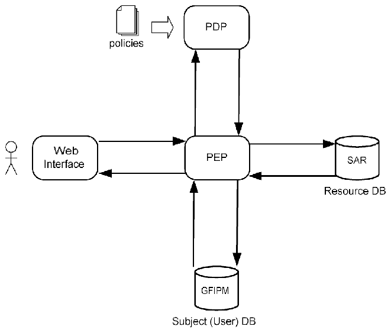

NIST IR 7815 日本語訳
英語タイトル : Access Control for SAR Systems日本語タイトル : SAR システムのアクセス制御
公開日 : 2011-07-01
原文URL : https://csrc.nist.gov/pubs/ir/7815/final
翻訳編集 : 自動生成（有志による非公式の日本語訳）, 原文取得日 : 2026-10-31, 訳文 : 389 / 401 ブロック
[要約] NIST IR 7815 は、Suspicious Activity Report（SAR）システムのアクセス制御に関する背景情報を機関に提供し、SAR データへのアクセスを制御するシステムの設計と実装を支援することを目的とした報告書です。2009 年に開始された Access Control for SAR Systems（ACSS）プロジェクトで開発された権限管理システムの試作を扱い、ポリシーの識別、エンコード、試験、配備という 4 つの段階からなるポリシーのライフサイクルを説明します。ポリシー評価テストベッド（Policy Evaluation Testbed、PET）の設計と実装、インストールとユーザーガイド、ユースケースの例も示しています。さらに、SAR システムのアクセス制御の開発に関連する課題と推奨事項、および今後の研究開発を論じています。
NIST IR 7815
NIST IR 7815
［NIST のロゴ。公的な標章のため、この非公式サイトには掲載していません。原本 PDF を参照してください。］
Access Control for SAR Systems
SAR システムのアクセス制御
Stephen Quirolgico
Vincent Hu
Tom Karygiannis
Stephen Quirolgico
Vincent Hu
Tom Karygiannis
Access Control for SAR Systems
SAR システムのアクセス制御
Stephen Quirolgico
Vincent Hu
Tom Karygiannis
Stephen Quirolgico
Vincent Hu
Tom Karygiannis
COMPUTER SECURITY
コンピュータセキュリティ
Computer Security Division
Information Technology Laboratory
National Institute of Standards and Technology
Gaithersburg, MD 20899-8940
コンピュータセキュリティ部門
情報技術研究所
米国国立標準技術研究所
Gaithersburg, MD 20899-8940
July 2011
2011年7月
U.S. Department of Commerce
Rebecca M. Blank, Acting Secretary
米国商務省
Rebecca M. Blank 長官代行
National Institute of Standards and Technology
Patrick Gallagher, Under Secretary for Standards and Technology and Director
米国国立標準技術研究所
Patrick Gallagher、NIST 所長兼商務次官（標準・技術担当）
Reports on Computer Systems Technology
コンピュータシステム技術に関する報告書
The Information Technology Laboratory (ITL) at the National Institute of Standards and Technology (NIST) promotes the U.S. economy and public welfare by providing technical leadership for the Nation’s measurement and standards infrastructure. ITL develops tests, test methods, reference data, proof of concept implementations, and technical analyses to advance the development and productive use of information technology. ITL’s responsibilities include the development of technical, physical, administrative, and management standards and guidelines for the cost-effective security and privacy of sensitive unclassified information in Federal computer systems. This NIST Interagency Report describes ITL’s research, guidance, and outreach efforts in computer security, and its collaborative activities with industry, government, and academic organizations.
米国国立標準技術研究所（NIST）の情報技術研究所（ITL）は、国の計測・標準の基盤に対して技術的なリーダーシップを提供することにより、米国の経済と公共の福祉を推進しています。ITL は、情報技術の発展と生産的な利用を進めるために、試験、試験方法、参照データ、概念実証の実装、技術分析を開発しています。ITL の責務には、連邦コンピュータシステムにおける機密扱いでない取扱注意情報の、費用対効果の高いセキュリティとプライバシーのための、技術的、物理的、管理的、運用管理上の標準およびガイドラインの開発が含まれます。この NIST Interagency Report は、コンピュータセキュリティにおける ITL の研究、ガイダンス、普及活動と、産業界、政府、学術機関との協力活動について説明します。
National Institute of Standards and Technology Interagency Report 7815
National Institute of Standards and Technology Interagency Report 7815
Disclaimer
免責事項
This document identifies certain software products, but such identification does not imply recommendation by the US National Institute for Standards and Technology, nor does it imply that the products identified are necessarily the best available for the purpose.
本書では特定のソフトウェア製品を明記していますが、そのように明記することは、米国国立標準技術研究所による推奨を意味するものではなく、明記された製品が当該目的に利用可能な最良のものであると必ずしも意味するものでもありません。
Acknowledgements
謝辞
The authors wish to thank their colleagues who reviewed drafts of this document. The authors also gratefully acknowledge and appreciate the comments and contributions made by government agencies, private organizations, and individuals in providing direction and assistance in the development of this document.
著者は、本書の草案をレビューした同僚に感謝します。また、著者は、本書の作成にあたり方向性と支援を提供してくださった、政府機関、民間組織、個人からのコメントと貢献に、深く感謝します。
TABLE OF CONTENTS
目次
TABLE OF CONTENTS
目次
TABLE OF FIGURES
図の一覧
FIGURE 1. POLICY LIFECYCLE PHASES — 1
図 1. ポリシーのライフサイクルの段階 — 1
FIGURE 2. EXAMPLE SAR POLICY DERIVATION — 5
図 2. SAR ポリシーの導出の例 — 5
FIGURE 3. XACML DATA-FLOW MODEL [OASIS-A] — 8
図 3. XACML のデータフローモデル [OASIS-A] — 8
FIGURE 4. PET ARCHITECTURE — 9
図 4. PET のアーキテクチャ — 9
FIGURE 5. PET USER AUTHENTICATION — 9
図 5. PET のユーザー認証 — 9
FIGURE 6. QUERYING SAR RECORDS — 11
図 6. SAR レコードへの問い合わせ — 11
FIGURE 7. PET IMPLEMENTATION — 11
図 7. PET の実装 — 11
FIGURE 8. PET LOGIN INTERFACE — 13
図 8. PET のログインインタフェース — 13
FIGURE 9. PET QUERY INTERFACE — 13
図 9. PET のクエリインタフェース — 13
FIGURE 10. RETRIEVED SAR RECORD — 14
図 10. 取得された SAR レコード — 14
FIGURE 11. PET DIRECTORY — 19
図 11. PET のディレクトリ — 19
FIGURE 12. SUBJECT (USER) ATTRIBUTES — 24
図 12. 主体（ユーザー）の属性 — 24
FIGURE 13. QUERYING SAR RECORDS — 25
図 13. SAR レコードへの問い合わせ — 25
FIGURE 14. COMPLYING WITH STATE'S POLICIES — 25
図 14. 州のポリシーへの準拠 — 25
FIGURE 15. RETRIEVED SUMMARY SLT SAR RECORD — 26
図 15. 取得された要約 SLT の SAR レコード — 26
FIGURE 16. QUERYING LICENSE NUMBER — 27
図 16. 免許番号の問い合わせ — 27
FIGURE 17. COMPLYING WITH STATE B POLICIES — 27
図 17. 州 B のポリシーへの準拠 — 27
FIGURE 18. RETRIEVED FULL SAR REPORT — 28
図 18. 取得された完全な SAR 報告書 — 28
TABLE OF TABLES
表の一覧
TABLE 1. REFERENCED STANDARDS AND OPEN SOURCE COMPONENTS — 17
表 1. 参照される標準とオープンソースの構成要素 — 17
TABLE 2. SYSTEMS FOR SUPPORTING PET COMPONENTS — 18
表 2. PET の構成要素をサポートするシステム — 18
TABLE 3. SAR FIELD VALUES FOR STATES A, B, AND C — 21
表 3. 州 A、B、C の SAR のフィールド値 — 21
TABLE 4. STATE GENERAL AUTHORIZATION POLICIES — 23
表 4. 州の一般的な認可ポリシー — 23
TABLE 5. STATE RECORD-LEVEL AUTHORIZATION POLICIES — 23
表 5. 州のレコード単位の認可ポリシー — 23
TABLE 6. SUBJECT (USER) ATTRIBUTES — 23
表 6. 主体（ユーザー）の属性 — 23
1 INTRODUCTION
1 はじめに
In 2009, the National Institute of Standards and Technology on behalf of the Program Manager, Information Sharing Environment (PM-ISE), Office of the Director of National Intelligence (ODNI), initiated the Access Control for SAR Systems (ACSS) project. This project focused on developing a prototype privilege management system used to express and enforce policies for controlling access to Suspicious Activity Report (SAR) data within the law enforcement domain. This work included the design, implementation and integration of distributed software components for rendering policy decisions, storing subject and resource data, and facilitating web-based retrieval of SAR records. In addition, this pilot included work to support the lifecycle of policies used by the privilege management system. This policy lifecycle comprised four phases: (1) identification, (2) encoding, (3) testing, and (4) deployment of policies. The identification phase involved the identification of pertinent laws, statutes and policies for granting or denying access to SAR records. After these laws, statutes and policies were identified, they were encoded into a computer-processable representation during the encoding phase. Encoded laws, statutes and policies were then tested during the testing phase to ensure correctness and accuracy. Finally, during the deployment phase, the encoded laws, statutes and policies were deployed in the developed privilege management system. This general policy lifecycle is shown in Figure 1.
2009 年、米国国立標準技術研究所は、Office of the Director of National Intelligence（ODNI）の Program Manager, Information Sharing Environment（PM-ISE）に代わって、Access Control for SAR Systems（ACSS）プロジェクトを開始しました。このプロジェクトは、法執行の分野における Suspicious Activity Report（SAR）データへのアクセスを制御するためのポリシーを表現し、実施するために使用される、権限管理システムの試作の開発に焦点を当てました。この作業には、ポリシーの決定を下し、主体とリソースのデータを格納し、Web ベースでの SAR レコードの取得を促進するための、分散したソフトウェア構成要素の設計、実装、統合が含まれていました。加えて、このパイロットには、権限管理システムが使用するポリシーのライフサイクルを支援する作業が含まれていました。このポリシーのライフサイクルは、ポリシーの (1) 識別、(2) エンコード、(3) 試験、(4) 配備という 4 つの段階で構成されます。識別の段階では、SAR レコードへのアクセスを許可または拒否するための、関連する法律、制定法、ポリシーを識別しました。これらの法律、制定法、ポリシーが識別された後、エンコードの段階で、コンピュータが処理できる表現にエンコードされました。次に、エンコードされた法律、制定法、ポリシーは、試験の段階で、正確さと精度を確保するために試験されました。最後に、配備の段階で、エンコードされた法律、制定法、ポリシーは、開発された権限管理システムに配備されました。この一般的なポリシーのライフサイクルを図 1 に示します。
![Cycle diagram of four ellipses in a row, linked left to right by hollow arrows: "Identify Laws, Statutes, and Policies" → "Encode Laws, Statutes, and Policies" → "Test Encoded Laws, Statutes, and Policies" → "Deploy Encoded Laws, Statutes and Policies". Lines run down from the bottoms of the second, third and fourth ellipses and join a return path below the row that ends in a large hollow arrow pointing up to the first ellipse, "Identify Laws, Statutes, and Policies", showing that each later phase can return to identification.](assets/ir-7815/p0010-drawing-01.png)
4 つの楕円を横に並べ、白抜きの矢印で左から右へ結んだ循環図です。「Identify Laws, Statutes, and Policies」（法律・制定法・ポリシーの特定）→「Encode Laws, Statutes, and Policies」（法律・制定法・ポリシーのエンコード）→「Test Encoded Laws, Statutes, and Policies」（エンコードした法律・制定法・ポリシーのテスト）→「Deploy Encoded Laws, Statutes and Policies」（エンコードした法律・制定法・ポリシーの展開）の順です。2 番目から 4 番目の楕円の下端から線が下へ伸びて行の下の戻り経路に合流し、その経路は最初の楕円「Identify Laws, Statutes, and Policies」（法律・制定法・ポリシーの特定）を下から指す大きな白抜きの矢印で終わります。後の各段階から特定の段階へ戻れることを示しています。
Figure 1. Policy lifecycle phases.
図 1. ポリシーのライフサイクルの段階。
This report details the work conducted for the Access Control for SAR Systems (ACSS) project. We begin by describing the phases of the policy lifecycle and introduce some concepts that are fundamental to the design and implementation of a privilege management system. Next, we describe the design and implementation of the Policy Evaluation Testbed (PET) system. The PET system is a prototype privilege management system developed to demonstrate the application of access control policies to SAR records. We then follow with a discussion of the installation and usage of the PET system. This discussion also includes an example use-case scenario that demonstrates the application of policies to SAR records. Next, we describe issues uncovered during the design and implementation of the privilege management system as well during the identification, encoding, testing and deployment of policies. For these issues, we offer general and domain-specific recommendations. Finally, we conclude with a description of future research and development topics aimed at facilitating the development of privilege management systems.
本報告書は、Access Control for SAR Systems（ACSS）プロジェクトのために実施された作業を詳しく説明します。まず、ポリシーのライフサイクルの段階を説明し、権限管理システムの設計と実装の基礎となるいくつかの概念を紹介します。次に、Policy Evaluation Testbed（PET）システムの設計と実装を説明します。PET システムは、SAR レコードへのアクセス制御ポリシーの適用を実証するために開発された、権限管理システムの試作です。続いて、PET システムのインストールと使用について論じます。この議論には、SAR レコードへのポリシーの適用を実証する、ユースケースのシナリオの例も含まれます。次に、権限管理システムの設計と実装の際、またポリシーの識別、エンコード、試験、配備の際に明らかになった課題を説明します。これらの課題について、一般的な推奨事項と、分野固有の推奨事項を示します。最後に、権限管理システムの開発を促進することを目的とした、今後の研究開発の話題の説明で締めくくります。
1.1 Authority
1.1 権限
The National Institute of Standards and Technology (NIST) developed this document in furtherance of its statutory responsibilities under the Federal Information Security Management Act (FISMA) of 2002, Public Law 107-347.
米国国立標準技術研究所（NIST）は、2002 年の Federal Information Security Management Act（FISMA）、Public Law 107-347 に基づく法定の責務を果たすために、本書を作成しました。
NIST is responsible for developing standards and guidelines, including minimum requirements, for providing adequate information security for all agency operations and assets, but such standards and guidelines shall not apply to national security systems. This document is consistent with the requirements of the Office of Management and Budget (OMB) Circular A-130, Section 8b(3), “Securing Agency Information Systems,” as analyzed in A-130, Appendix IV: Analysis of Key Sections. Supplemental information is provided in A-130, Appendix III.
NIST は、すべての機関の業務と資産に適切な情報セキュリティを提供するための、最低限の要件を含む標準とガイドラインを策定する責任を負いますが、そのような標準とガイドラインは国家安全保障システムには適用されません。本書は、A-130 の付録 IV: 主要な節の分析で分析されているとおり、Office of Management and Budget（OMB）Circular A-130 の第 8b(3) 節「Securing Agency Information Systems」の要件と整合しています。補足情報は、A-130 の付録 III に示されています。
This guideline has been prepared for use by Federal agencies. It may be used by nongovernmental organizations on a voluntary basis and is not subject to copyright, though attribution is desired.
このガイドラインは、連邦機関が使用するために作成されました。非政府組織が任意で使用してもよく、著作権の対象ではありませんが、出典の明記が望まれます。
Nothing in this document should be taken to contradict standards and guidelines made mandatory and binding on Federal agencies by the Secretary of Commerce under statutory authority, nor should these guidelines be interpreted as altering or superseding the existing authorities of the Secretary of Commerce, Director of the OMB, or any other Federal official.
本書のいかなる内容も、法定の権限に基づいて商務長官が連邦機関に対して義務的かつ拘束力のあるものとした標準やガイドラインに反するものと解釈してはならず、また、これらのガイドラインを、商務長官、OMB 長官、またはその他の連邦職員の既存の権限を変更し、またはそれに優先するものと解釈してはなりません。
1.2 Document Scope and Purpose
1.2 文書の適用範囲と目的
The purpose of this document is to provide agencies with background information on access control for SAR systems and to assist them in designing and implementing a system for controlling access to SAR data. The document discusses the policy development lifecycle, implementation of a privilege management system for controlling access to SAR data, and issues and recommendations related to the development of access control for SAR systems.
本書の目的は、SAR システムのアクセス制御に関する背景情報を機関に提供し、SAR データへのアクセスを制御するシステムの設計と実装を支援することです。本書は、ポリシー策定のライフサイクル、SAR データへのアクセスを制御するための権限管理システムの実装、SAR システムのアクセス制御の開発に関連する課題と推奨事項を論じます。
1.3 Audience and Assumptions
1.3 想定読者と前提
This document assumes that the readers have basic knowledge of access control, particularly attribute-based access control. Because of the constantly changing nature of the information technology industry, readers are strongly encouraged to take advantage of other resources (including those listed in this document) for more current and detailed information.
本書は、読者がアクセス制御、特に属性ベースのアクセス制御に関する基本的な知識を持っていることを前提としています。情報技術業界は絶えず変化する性質を持つため、読者は、より最新で詳細な情報を得るために、（本書に挙げたものを含む）他の資料を活用することが強く推奨されます。
1.4 Definitions
1.4 定義
For this report the following terms and definitions apply.
本報告書では、次の用語と定義が適用されます。
| Access Control | A system which enables an authority to control access to areas and resources in a given physical facility or computer-based information system. |
|---|---|
| Authentication | The act of establishing or confirming someone as authentic. |
| Authorization | The function of specifying access rights to resources. |
| PDP | A system entity that evaluates encoded policies and renders an authorization decision. |
| PEP | A system entity that performs access control by making decision requests and enforcing authorization decisions by the PDP. |
| Policy | A principle or rule to guide decisions and achieve rational outcome(s). |
| Access Control | 特定の物理的施設またはコンピュータベースの情報システムにおける区域とリソースへのアクセスを、権限者が制御できるようにするシステム。 |
|---|---|
| Authentication | ある人物が本物であることを確立または確認する行為。 |
| Authorization | リソースへのアクセス権を指定する機能。 |
| PDP | エンコードされたポリシーを評価し、認可の決定を下すシステムのエンティティ。 |
| PEP | 決定要求を行い、PDP による認可の決定を実施することによって、アクセス制御を行うシステムのエンティティ。 |
| Policy | 決定を導き、合理的な成果を達成するための原則または規則。 |
1.5 Abbreviations
1.5 略語
| ABAC | Attribute-Based Access Control |
|---|---|
| ACPT | Access Control Policy Tool |
| EJB | Enterprise Java Beans |
| GAF | General Attribute Framework |
| GFIPM | Global Federated Identity Privilege Management |
| GWT | Google Web Toolkit |
| HSIN | Homeland Security Information Network |
| ISE | Information Sharing Environment |
| NIEM | National Information Exchange Model |
| NIST | National Institute of Standards and Technology |
| ODNI | Office of the Director of National Intelligence |
| OWL | Web Ontology Language |
| PAP | Policy Administration Point |
| PDP | Policy Decision Point |
| PEP | Policy Enforcement Point |
| PET | Policy Evaluation Testbed |
| PII | Personally Identifiable Information |
| PIP | Policy Information Point |
| PM-ISE | Program Manager – Information Sharing Environment |
| RDF | Resource Description Framework |
| RPC | Remote Procedure Call |
| SAR | Suspicious Activity Report |
| SPARQL | SPARQL Protocol and RDF Query Language |
| SLT | State/Local/Tribal |
| SSL | Secure Sockets Layer |
| TLS | Transport Layer Security |
| XACML | eXtensible Access Control Markup Language |
| ABAC | 属性ベースアクセス制御 |
|---|---|
| ACPT | アクセス制御ポリシーツール |
| EJB | Enterprise Java Beans |
| GAF | General Attribute Framework |
| GFIPM | Global Federated Identity Privilege Management |
| GWT | Google Web Toolkit |
| HSIN | Homeland Security Information Network |
| ISE | Information Sharing Environment |
| NIEM | National Information Exchange Model |
| NIST | 米国国立標準技術研究所 |
| ODNI | Office of the Director of National Intelligence |
| OWL | Web Ontology Language |
| PAP | ポリシー管理ポイント |
| PDP | ポリシー決定ポイント |
| PEP | ポリシー実施ポイント |
| PET | Policy Evaluation Testbed |
| PII | 個人を特定できる情報 |
| PIP | ポリシー情報ポイント |
| PM-ISE | Program Manager – Information Sharing Environment |
| RDF | Resource Description Framework |
| RPC | Remote Procedure Call |
| SAR | 不審活動報告 |
| SPARQL | SPARQL Protocol and RDF Query Language |
| SLT | 州・地方・部族 |
| SSL | Secure Sockets Layer |
| TLS | Transport Layer Security |
| XACML | eXtensible Access Control Markup Language |
2 POLICY LIFECYCLE
2 ポリシーのライフサイクル
2.1 Policy Identification
2.1 ポリシーの識別
The first phase of the policy lifecycle involves the identification of laws, statutes and policies pertinent to granting or denying access to domain resources. The identification of laws, statutes and policies pertinent to granting or denying access to domain resources requires not only intimate knowledge of pertinent federal, state, local, tribal, and domain-specific laws, statutes and policies, but also of domain resources, it’s users and actions that users may invoke on those resources. In general, access control policies are motivated by laws, statutes, and policies that ensure the privacy of sensitive information including classified data and personally identifiable information (PII).
ポリシーのライフサイクルの最初の段階は、ドメインのリソースへのアクセスを許可または拒否することに関連する、法律、制定法、ポリシーの識別です。ドメインのリソースへのアクセスを許可または拒否することに関連する法律、制定法、ポリシーを識別するには、関連する連邦、州、地方、部族、ドメイン固有の法律、制定法、ポリシーについての深い知識だけでなく、ドメインのリソース、そのユーザー、ユーザーがそれらのリソースに対して実行し得る動作についての深い知識も必要です。一般に、アクセス制御ポリシーは、機密情報や個人を特定できる情報（PII）を含む、取扱注意情報のプライバシーを確保する法律、制定法、ポリシーによって動機づけられます。
After pertinent laws, statutes and policies have been identified, work must be conducted to map these laws, statutes and policies to domain-specific policies. The first step in this process entails the mapping of general laws, statutes and policies into Attribute-Based Access Control (ABAC) [Blaze, Brown, Pimlott] rules. An ABAC rule is a triple \(\langle \mathit{SA}, A, \mathit{RA} \rangle\) where SA represents a set of domain subject (i.e., user or process) attributes, RA represents a set of domain resource attributes, and A represents a set of actions that users may invoke on resources. The set SA is defined by a subject attribute data model that defines subject attributes (and their interrelationships) required to render a policy decision (i.e., permit or deny access to a resource). Such attributes may include, for example, the role, rank and operating unit of an employee. The set RA is defined by a resource attribute data model that defines resource attributes (and their interrelationships) required to render a policy decision. Such attributes may include, for example, the fields of a resource database record or the clearance level of the resource (i.e., public, secret, or top secret). Set A defines a set of actions that a user having a subset of attributes in SA may invoke on a resource having a subset of attributes in RA. Actions may include “READ”, “WRITE”, or “EXECUTE” operations. Other attribute data models may also exist including environment and obligation attribute data models. Figure 2 shows an example mapping of laws, statutes and policies to an ABAC rule for a law enforcement domain. Here, we use the Global Federated Identity Privilege Management (GFIPM) [GFIPM] specification to represent the subject attribute data model and the NIEM SAR [NIEM-a, NIEM-b] specification to represent the resource attribute data model. In addition, we use the set {“R”,”W”,”E”} (i.e., “READ”,”WRITE”,”EXECUTE”) to represent the set of possible actions.
関連する法律、制定法、ポリシーを識別した後は、これらの法律、制定法、ポリシーをドメイン固有のポリシーに対応付ける作業を行わなければなりません。このプロセスの最初のステップは、一般的な法律、制定法、ポリシーを、属性ベースアクセス制御（Attribute-Based Access Control: ABAC）[Blaze, Brown, Pimlott] の規則に対応付けることです。ABAC の規則は 3 つ組 \(\langle \mathit{SA}, A, \mathit{RA} \rangle\) です。ここで、SA はドメインの主体（すなわち、ユーザーまたはプロセス）の属性の集合、RA はドメインのリソースの属性の集合、A はユーザーがリソースに対して実行し得る動作の集合を表します。集合 SA は、ポリシーの決定を下す（すなわち、リソースへのアクセスを許可または拒否する）のに必要な主体の属性（とそれらの相互関係）を定義する、主体属性のデータモデルによって定義されます。そのような属性には、たとえば、従業員の役割、階級、運用部門などがあります。集合 RA は、ポリシーの決定を下すのに必要なリソースの属性（とそれらの相互関係）を定義する、リソース属性のデータモデルによって定義されます。そのような属性には、たとえば、リソースのデータベースレコードのフィールドや、リソースの機密区分（すなわち、公開、秘、極秘）があります。集合 A は、SA の属性の部分集合を持つユーザーが、RA の属性の部分集合を持つリソースに対して実行し得る動作の集合を定義します。動作には、“READ”、“WRITE”、“EXECUTE” の操作が含まれる場合があります。環境属性のデータモデルや義務属性のデータモデルなど、ほかの属性のデータモデルも存在する場合があります。図 2 は、法執行の分野における、法律、制定法、ポリシーの ABAC の規則への対応付けの例を示します。ここでは、Global Federated Identity Privilege Management（GFIPM）[GFIPM] 仕様を使って主体属性のデータモデルを表し、NIEM SAR [NIEM-a, NIEM-b] 仕様を使ってリソース属性のデータモデルを表します。加えて、集合 {“R”,”W”,”E”}（すなわち、“READ”、“WRITE”、“EXECUTE”）を使って、可能な動作の集合を表します。
Before a policy can be derived from an ABAC rule, a new rule must be defined that specifies subsets of the ABAC rule. These subsets of attributes reflect the attributes used for a specific policy. That is, we let \(\langle \mathit{SA}', A', \mathit{RA}' \rangle\) represent the triple of ABAC rules where \(\mathit{SA}' \subseteq \mathit{SA}\) represents a set of subject attributes, \(A' \subseteq A\) represents a set of action attributes and \(\mathit{RA}' \subseteq \mathit{RA}\) represents a set of resource attributes for some specific policy.
ABAC の規則からポリシーを導出する前に、ABAC の規則の部分集合を規定する新しい規則を定義しなければなりません。これらの属性の部分集合は、特定のポリシーに使用される属性を反映します。すなわち、\(\langle \mathit{SA}', A', \mathit{RA}' \rangle\) を ABAC の規則の 3 つ組を表すものとし、ここで \(\mathit{SA}' \subseteq \mathit{SA}\) は主体の属性の集合、\(A' \subseteq A\) は動作の属性の集合、\(\mathit{RA}' \subseteq \mathit{RA}\) は、ある特定のポリシーのリソースの属性の集合を表します。
![Derivation diagram. At the top, a cloud labeled "Laws, Statutes, and Policies". Three arrows go down from it, labeled "SA", "A" and "RA", to the row labeled "ABAC rule:", which reads "<GFIPM, {"R","W","E"}, SAR>". Below each of the three parts, a hollow down arrow labeled "SA'", "A'" and "RA'" leads to the row labeled "ABAC rule subset:", which reads "<"Law Enforcement Officer", "R", "Vehicle Registration Number">". Three arrows from these parts converge on the row labeled "Policy:", which reads "If subject is a law enforcement officer then he/she can read the resource if it is a vehicle registration number."](assets/ir-7815/p0014-drawing-01.png)
導出の流れを示す図です。最上部に「Laws, Statutes, and Policies」（法律・制定法・ポリシー）と書かれた雲形があります。そこから「SA」「A」「RA」と記した 3 本の矢印が下へ伸び、「ABAC rule:」（ABAC ルール）の行の「<GFIPM, {"R","W","E"}, SAR>」を指します。その 3 つの要素の下には、それぞれ「SA'」「A'」「RA'」と記した白抜きの下向き矢印があり、「ABAC rule subset:」（ABAC ルールの部分集合）の行の「<"Law Enforcement Officer", "R", "Vehicle Registration Number">」（法執行官、読み取り、車両登録番号）へつながります。さらにこの 3 つから伸びる矢印が 1 点に集まり、「Policy:」（ポリシー）の行の「If subject is a law enforcement officer then he/she can read the resource if it is a vehicle registration number.」（主体が法執行官であれば、リソースが車両登録番号である場合にそれを読み取れる）を指します。
Figure 2. Example SAR policy derivation.
図 2. SAR ポリシーの導出の例。
For example, a policy may only require the subject attribute “Law enforcement officer” from the set of attributes defined in the GFIPM data model, the “R” (Read) action and the “Vehicle Registration Number” resource attribute from the set of attributes defined in the SAR data model. This ABAC rule subset is shown in Figure 2.
たとえば、あるポリシーは、GFIPM データモデルで定義された属性の集合のうち主体属性「Law enforcement officer」だけ、「R」（Read）の動作、SAR データモデルで定義された属性の集合のうちリソース属性「Vehicle Registration Number」だけを必要とする場合があります。この ABAC の規則の部分集合を図 2 に示します。
We define an ABAC policy as a set of ABAC rules. In the current example, we assume that the attributes of ABAC rules have a Boolean data type with true and false values. Thus, the policy reads: If it is true that the subject is a law enforcement officer and it is true that the resource to be accessed is a vehicle registration number and it is true that the access action is read, then the permission is true.
ABAC のポリシーを、ABAC の規則の集合として定義します。現在の例では、ABAC の規則の属性が、true と false の値を持つ Boolean のデータ型であると仮定します。したがって、このポリシーは次のように読めます。主体が法執行官であることが true であり、アクセスされるリソースが車両登録番号であることが true であり、アクセスの動作が読み取りであることが true であれば、許可は true です。
2.2 Policy Encoding
2.2 ポリシーのエンコード
After all policies have been defined, they must be encoded in a computer-processable representation such as the eXtensible Access Control Markup Language (XACML)[OASIS-a], Resource Description Framework (RDF) [W3C-a] or Web Ontology Language (OWL) [W3C-b]. Often, such representations are coupled to components, systems or platforms for supporting the creation, maintenance, processing, and sharing of policies. For example, policies encoded in an XACML document will require a system for supporting the maintenance, processing and sharing of XACML-related documents. The selection of an encoding representation affects many aspects of a privilege management system including (1) the ability to support certain types of policies,
すべてのポリシーを定義した後は、eXtensible Access Control Markup Language（XACML）[OASIS-a]、Resource Description Framework（RDF）[W3C-a]、Web Ontology Language（OWL）[W3C-b] など、コンピュータが処理できる表現にエンコードしなければなりません。このような表現は、ポリシーの作成、保守、処理、共有を支援するための、構成要素、システム、プラットフォームと結び付いていることがよくあります。たとえば、XACML 文書にエンコードされたポリシーには、XACML 関連の文書の保守、処理、共有を支援するシステムが必要になります。エンコード表現の選択は、権限管理システムの多くの側面に影響します。これには、(1) 特定の種類のポリシーをサポートする能力、
(2) the way in which policy decisions are requested and responded, (3) the components and infrastructure required for supporting the encoded representation, (5) the ease of creating and maintaining encoded policies, and (6) the interoperability with other systems.
(2) ポリシーの決定が要求され応答される方法、(3) エンコードされた表現をサポートするために必要な構成要素と基盤、(5) エンコードされたポリシーの作成と保守の容易さ、(6) 他のシステムとの相互運用性が含まれます。
2.3 Policy Testing
2.3 ポリシーの試験
After policies have been encoded, they must be tested to ensure that they are complete and correct. This is particularly true when multiple policies are considered when rendering the final decision since discrepancies or conflicts may exist. Identifying discrepancies or conflicts between policy specifications and their intended function is crucial to the proper operation of a privilege management system. As a result, policy specifications must undergo rigorous verification and validation to ensure that the policy specifications truly encapsulate the desires of the policy authors.
ポリシーをエンコードした後は、それらが完全で正しいことを確実にするために、試験しなければなりません。これは、最終的な決定を下す際に複数のポリシーが考慮される場合に特に当てはまります。不一致や競合が存在する場合があるためです。ポリシーの仕様と、その意図された機能の間の不一致や競合を識別することは、権限管理システムが適切に動作するために極めて重要です。その結果、ポリシーの仕様は、それがポリシーの作成者の意図を本当に包含していることを確実にするために、厳密な検証と妥当性確認を受けなければなりません。
2.4 Policy Deployment
2.4 ポリシーの配備
The deployment of encoded policies involves making them available to the system component that renders policy decisions. However, other components of a privilege management system may also need to be tailored to support encoded policies. To better understand how components of a privilege management system must be designed and implemented to support encoded policies, it is necessary to understand the design and implementation of a privilege management system. In Section 3, we describe the design and implementation of the Policy Evaluation Testbed privilege management system.
エンコードされたポリシーの配備は、それらを、ポリシーの決定を下すシステムの構成要素が利用できるようにすることを含みます。しかし、権限管理システムの他の構成要素も、エンコードされたポリシーをサポートするように調整する必要がある場合があります。エンコードされたポリシーをサポートするために、権限管理システムの構成要素をどのように設計し実装しなければならないかをよりよく理解するには、権限管理システムの設計と実装を理解する必要があります。第 3 節では、Policy Evaluation Testbed の権限管理システムの設計と実装を説明します。
3 PET DESIGN AND IMPLEMENTATION
3 PET の設計と実装
The Privilege Evaluation Testbed (PET) system is a system aimed at demonstrating the application of policies for controlling access to Suspicious Activity Report (SAR) data. This section defines the design and implementation of PET v1.0, the baseline version of PET that embodies the minimal components and mechanisms required for applying basic access control to SAR records.
Privilege Evaluation Testbed（PET）システムは、Suspicious Activity Report（SAR）データへのアクセスを制御するためのポリシーの適用を実証することを目的としたシステムです。本節は、SAR レコードに基本的なアクセス制御を適用するために必要な最小限の構成要素とメカニズムを具体化した、PET の基準版である PET v1.0 の設計と実装を定義します。
3.1 Functional Scope
3.1 機能の適用範囲
The scope of the design and architecture of PET v1.0 is driven by a set of functional requirements. These functional requirements include supporting:
PET v1.0 の設計とアーキテクチャの適用範囲は、一連の機能要件によって決まります。これらの機能要件には、次のサポートが含まれます。
•remote, web-based access to SAR records
•SAR レコードへのリモートでの Web ベースのアクセス
•fundamental authentication
•基本的な認証
•fundamental querying of SAR records
•SAR レコードの基本的な問い合わせ
•fundamental access control policies for granting or denying access to SAR records
•SAR レコードへのアクセスを許可または拒否するための、基本的なアクセス制御ポリシー
•the use of basic subject, resource and environment attributes
•基本的な主体、リソース、環境の属性の使用
•fundamental infrastructure security
•基本的な基盤のセキュリティ
•a subset of SAR-related access control policies highlighting specific Federal, State, Local, and Tribal laws, statutes and policies
•特定の連邦、州、地方、部族の法律、制定法、ポリシーに焦点を当てた、SAR 関連のアクセス制御ポリシーの部分集合
Note that this version of PET is a prototype system; it is not a full and comprehensive production system. Thus, this version of PET does not provide features that might be found in such a system including a complete set of SAR-related policies.
この版の PET は試作システムであり、完全で包括的な本番システムではないことに注意してください。したがって、この版の PET は、SAR 関連のポリシーの完全な集合を含め、そのようなシステムにあり得る機能を提供しません。
3.2 Architectural Overview
3.2 アーキテクチャの概要
PET is a distributed system that follows the non-normative XACML data-flow model [OASIS-a] as shown in Figure 3. The Policy Decision Point (PDP) is the system entity that evaluates encoded policies and renders an authorization decision. Encoded policies are made available to the PDP by a Policy Administration Point (PAP). The PDP interacts with the rest of the access control system through the system’s Context Handler. The Context Handler is the system entity that converts decision requests in the native request format to the XACML canonical form and converts authorization decisions in the XACML canonical form to the native response format. The context handler receives decision requests from the Policy Enforcement Point (PEP). The PEP is the system entity that performs access control by making decision requests and enforcing authorization decisions by the PDP. The PEP receives access requests from an Access Requester. An Access Requester may be any entity that requires access to a resource including a machine process requiring access to a file or a user requiring access to a database record. The Policy Information Point (PIP) provides the interface to access subject, resource and other attributes. A more detailed description of the XACML data-flow model is found in [OASIS-a].
PET は、図 3 に示す、規範的でない XACML データフローモデル [OASIS-a] に従う分散システムです。ポリシー決定ポイント（PDP）は、エンコードされたポリシーを評価し、認可の決定を下すシステムのエンティティです。エンコードされたポリシーは、ポリシー管理ポイント（PAP）によって PDP に提供されます。PDP は、システムのコンテキストハンドラーを通じて、アクセス制御システムの他の部分とやり取りします。コンテキストハンドラーは、ネイティブの要求形式の決定要求を XACML の正規形式に変換し、XACML の正規形式の認可の決定をネイティブの応答形式に変換する、システムのエンティティです。コンテキストハンドラーは、ポリシー実施ポイント（PEP）から決定要求を受け取ります。PEP は、決定要求を行い、PDP による認可の決定を実施することによって、アクセス制御を行うシステムのエンティティです。PEP は、アクセス要求者からアクセス要求を受け取ります。アクセス要求者は、ファイルへのアクセスを必要とする機械のプロセスや、データベースのレコードへのアクセスを必要とするユーザーを含め、リソースへのアクセスを必要とする任意のエンティティでよいです。ポリシー情報ポイント（PIP）は、主体、リソース、その他の属性にアクセスするためのインタフェースを提供します。XACML データフローモデルのより詳細な説明は、[OASIS-a] にあります。
［第三者の画像。第三者の著作物のため、この非公式サイトには掲載していません。原本 PDF を参照してください。］
Figure 3. XACML Data-Flow Model [OASIS-a].
図 3. XACML データフローモデル [OASIS-a]。
The PET system embodies a simplification of the XACML data-flow model architecture. For instance, PET combines the functionality of the PEP and Context Handler into a single PEP entity. In addition, certain components of the XACML data-flow model are omitted including the PAP (since the implemented PDP provides direct access to the system’s policies) and obligation services. The simplified PET architecture is shown in Figure 4.
PET システムは、XACML データフローモデルのアーキテクチャを簡略化したものを具体化しています。たとえば、PET は、PEP とコンテキストハンドラーの機能を単一の PEP エンティティに統合しています。加えて、XACML データフローモデルの特定の構成要素は省かれています。これには、PAP（実装された PDP がシステムのポリシーへの直接のアクセスを提供するため）と義務サービスが含まれます。簡略化された PET のアーキテクチャを図 4 に示します。
3.3 Concept of Operations
3.3 運用概念
The operation of the PET begins with a user authentication process. During the user authentication process, a user submits a login ID and password to the PEP via the PET (login) web interface. After receiving a user ID and password, the PEP attempts to authenticate the user by matching the received user ID and password against entries in the Subject (User) database. If a match exists, the PEP will (1) authorize the user for access to the PET system, (2) create a new user session, and (3) return the main PET page. If a match does not exist, however, the PEP returns an error to the user. The PET user authentication process is shown in Figure 5.
PET の動作は、ユーザー認証のプロセスから始まります。ユーザー認証のプロセスでは、ユーザーは、PET の（ログイン）Web インタフェースを通じて、ログイン ID とパスワードを PEP に送信します。PEP は、ユーザー ID とパスワードを受け取った後、受け取ったユーザー ID とパスワードを、主体（ユーザー）データベースのエントリと突き合わせることによって、ユーザーの認証を試みます。一致するものがあれば、PEP は、(1) ユーザーに PET システムへのアクセスを認可し、(2) 新しいユーザーセッションを作成し、(3) PET のメインページを返します。しかし、一致するものがなければ、PEP はユーザーにエラーを返します。PET のユーザー認証のプロセスを図 5 に示します。

構成図です。上部の箱「PDP」に「policies」（ポリシー。文書の束）が矢印で入ります。利用者の人型の隣の箱「Web Interface」（ウェブインターフェース）が中央の箱「PEP」と双方向の矢印でつながります。PEP は上の PDP、右の円柱「SAR」（「Resource DB」＝リソースDB）、下の円柱「GFIPM」（「Subject (User) DB」＝主体（利用者）DB）とそれぞれ矢印でつながっています。
Figure 4. PET architecture.
図 4. PET のアーキテクチャ。

図4と同じ構成（policies→PDP、利用者、「Web Interface」、「PEP」、リソースDB「SAR」、主体（利用者）DB「GFIPM」）に番号付きの手順を書き込んだ図です。「1. Submit login ID/password」（ログインIDとパスワードの送信）はウェブインターフェースから PEP へ、「2. Compare login ID/ password against Attributes table」（ログインIDとパスワードを属性表と照合）は PEP から GFIPM DB へ、「3. Return match/ no match」（一致・不一致を返す）は DB から PEP へ、「4. Return error or main PET page」（エラーまたは PET のメインページを返す）は PEP からウェブインターフェースへの矢印です。
Figure 5. PET user authentication.
図 5. PET のユーザー認証。
After being authorized by the PEP, the user may then query the system for SAR records. When querying for SAR records, the user will enter the query in the PET web interface which, in turn, is submitted to the PEP. The PEP then proceeds to submit one or more XACML Requests to the PDP to determine what level of access, if any, the user has to SAR records. If the user is not authorized to access any SAR records, an error is returned to the user. If the user is authorized to access a SAR record, the PDP will then identify the types of SAR records the user is authorized to access: Full, Summary ISE, or Summary SLT SAR records. A Full SAR record is a SAR record containing values for all fields. Both a Summary ISE (Information Sharing Environment) record and a Summary SLT (State/Local/Tribal) record is a SAR record containing values for only a subset of fields. For these records, fields are omitted based on the implemented policies. Such policies, for example, may omit values for SAR fields that describe personally identifiable information (PII).
PEP による認可の後、ユーザーはシステムに SAR レコードを問い合わせることができます。SAR レコードを問い合わせるとき、ユーザーは PET の Web インタフェースにクエリを入力し、それが PEP に送信されます。次に PEP は、ユーザーが SAR レコードに対してどの水準のアクセス権を持つか（もしあれば）を判断するために、1 つ以上の XACML Request を PDP に送信します。ユーザーが SAR レコードにアクセスする認可を受けていない場合、ユーザーにエラーが返されます。ユーザーが SAR レコードにアクセスする認可を受けている場合、PDP は次に、ユーザーがアクセスを認可された SAR レコードの種類、すなわち Full、Summary ISE、Summary SLT の SAR レコードを識別します。Full SAR レコードは、すべてのフィールドの値を含む SAR レコードです。Summary ISE（Information Sharing Environment）レコードと Summary SLT（州・地方・部族）レコードは、どちらもフィールドの部分集合のみの値を含む SAR レコードです。これらのレコードでは、実装されたポリシーに基づいてフィールドが省かれます。たとえば、そのようなポリシーは、個人を特定できる情報（PII）を記述する SAR のフィールドの値を省く場合があります。
Given the policies maintained by the PDP, the PDP will render a policy decision whether the user is authorized to access Full, Summary ISE, Summary SLT, or no SAR records. If the user is not authorized to access any SAR records, the PDP will deny the request and the PEP will return an error to the user. However, if the user is authorized to access a Full, Summary ISE, or Summary SLT SAR record, the PDP will permit the request and inform the PEP of this decision. The PEP will then query the SAR database for matching SAR records, filter fields from these records if necessary (to derive Summary ISE or Summary SLT records) and return the records to the user. The SAR record query process is shown in Figure 6.
PDP が保持するポリシーに基づいて、PDP は、ユーザーが Full、Summary ISE、Summary SLT、または SAR レコードなしのいずれにアクセスする認可を受けているかについて、ポリシーの決定を下します。ユーザーが SAR レコードにアクセスする認可を受けていない場合、PDP は要求を拒否し、PEP はユーザーにエラーを返します。しかし、ユーザーが Full、Summary ISE、Summary SLT の SAR レコードにアクセスする認可を受けている場合、PDP は要求を許可し、この決定を PEP に通知します。次に PEP は、SAR データベースに一致する SAR レコードを問い合わせ、必要に応じて（Summary ISE または Summary SLT のレコードを導出するために）これらのレコードからフィールドを除外し、そのレコードをユーザーに返します。SAR レコードの問い合わせのプロセスを図 6 に示します。
3.4 PET Components
3.4 PET の構成要素
The implementation of PET involves the development, configuration, and integration of several components, technologies and standards. The PET implementation architecture is shown in Figure 7.
PET の実装には、いくつかの構成要素、技術、標準の開発、構成、統合が含まれます。PET の実装アーキテクチャを図 7 に示します。
![The same architecture with numbered steps for a query: "1. Submit SAR query" (Web Interface to PEP); "2. Query valid user session" (PEP to GFIPM Subject (User) DB); "3. Return valid/ invalid session" (DB to PEP); "4. If valid session, query PDP for SAR access" and "5. Submit XACML request" (PEP to PDP); "6. Using policies, render decision response" (at the PDP); "7. Return XACML response" (PDP to PEP); "8. If authorized by PDP, query SAR DB for requested data" (PEP to SAR Resource DB); "9. Return requested data" (DB to PEP); "10. Filter SAR data if needed" (at the PEP); "11. Return error page, PDP decision, or requested data" (PEP to Web Interface).](assets/ir-7815/p0020-figure-01.png)
同じ構成に問い合わせの手順を番号付きで書き込んだ図です。「1. Submit SAR query」（SAR の問い合わせを送信。ウェブインターフェース→PEP）、「2. Query valid user session」（有効な利用者セッションを照会。PEP→GFIPM 主体（利用者）DB）、「3. Return valid/ invalid session」（セッションの有効・無効を返す。DB→PEP）、「4. If valid session, query PDP for SAR access」（有効なら SAR へのアクセスを PDP に照会）と「5. Submit XACML request」（XACML 要求の送信。PEP→PDP）、「6. Using policies, render decision response」（ポリシーを使って判定応答を出す。PDP）、「7. Return XACML response」（XACML 応答を返す。PDP→PEP）、「8. If authorized by PDP, query SAR DB for requested data」（PDP が認可すれば、要求データを SAR DB に照会。PEP→SAR リソースDB）、「9. Return requested data」（要求データを返す。DB→PEP）、「10. Filter SAR data if needed」（必要なら SAR データをフィルタ。PEP）、「11. Return error page, PDP decision, or requested data」（エラーページ、PDP の判定、または要求データを返す。PEP→ウェブインターフェース）です。
Figure 6. Querying SAR records.
図 6. SAR レコードの問い合わせ。

実装の構成図です。「XACML」のポリシーが「JBoss XACML」と記された「PDP」に入ります。PDP と「PEP」は「SOAP,SAML,XACML Request/Response」（要求・応答）をやり取りします。利用者の「Web Interface」（「AJAX,GWT」と記載）は「GWT/RPC/SSL/TLS」で PEP とやり取りします。PEP は「XPath,XQuery」で円柱「SAR」（「eXist NXD」と記載）と下の円柱「GFIPM」（「eXist NXD」と記載）にアクセスします。
Figure 7. PET implementation.
図 7. PET の実装。
3.4.1 Web Interface
3.4.1 Web インタフェース
The PET web interface supports user login, querying and displaying of SAR records, and logout functionality. These functions are communicated to the PEP via the Google Web Toolkit (GWT) [GWT] Remote Procedure Call (RPC) mechanism allowing the PEP to push data to the interface. With respect to security, secure communication via Secure Sockets Layer (SSL) and Transport Layer Security (TLS) is implemented between the PET user interface and the PEP host server.
PET の Web インタフェースは、ユーザーのログイン、SAR レコードの問い合わせと表示、ログアウトの機能をサポートします。これらの機能は、PEP がインタフェースにデータをプッシュできるようにする Google Web Toolkit（GWT）[GWT] の Remote Procedure Call（RPC）メカニズムを介して PEP に伝達されます。セキュリティに関しては、PET のユーザーインタフェースと PEP のホストサーバーの間で、Secure Sockets Layer（SSL）と Transport Layer Security（TLS）による安全な通信が実装されています。
3.4.1.1 Login Interface
3.4.1.1 ログインインタフェース
The PET login interface contains fields for user ID and password as well as a button for submitting user input data to the PEP. Here, an RPC is invoked to submit login information to the PEP. The PET login interface is shown in Figure 8.
PET のログインインタフェースには、ユーザー ID とパスワードのフィールドと、ユーザーの入力データを PEP に送信するボタンがあります。ここでは、ログイン情報を PEP に送信するために RPC が呼び出されます。PET のログインインタフェースを図 8 に示します。
The PET query interface provides mechanisms for logging out of the PET system, querying SAR records, and viewing query results.1 The PET user interface page, which is generated dynamically by the PEP, contains forms for data input. The SAR query user interface page provides “Google-like” search capabilities by allowing queries to be entered as keywords. For two or more keywords, a conjunctive operator is used. Figure 9 shows a query with the keywords “Springfield Nuclear Power Plant” from a database maintained by State C.2
PET のクエリインタフェースは、PET システムからのログアウト、SAR レコードの問い合わせ、問い合わせ結果の閲覧のためのメカニズムを提供します。1PEP によって動的に生成される PET のユーザーインタフェースのページには、データ入力用のフォームがあります。SAR の問い合わせ用ユーザーインタフェースのページは、クエリをキーワードとして入力できるようにすることで、「Google のような」検索機能を提供します。2 つ以上のキーワードには、論理積の演算子が使用されます。図 9 は、州 C が保持するデータベースに対する、キーワード「Springfield Nuclear Power Plant」による問い合わせを示します。2
3.4.1.2 Query Interface
3.4.1.2 クエリインタフェース
The PET query interface page displays retrieved SAR records in their original XML format. Note that the query interface informs the user that certain policy restrictions for accessing SAR records may apply. This is achieved through a status bar indicator as well as the blocking of certain SAR record field values (denoted in red font). Figure 10 shows a retrieved SAR record.
PET のクエリインタフェースのページは、取得された SAR レコードを元の XML 形式で表示します。クエリインタフェースは、SAR レコードへのアクセスに特定のポリシー上の制限が適用される場合があることをユーザーに知らせることに注意してください。これは、ステータスバーの表示と、特定の SAR レコードのフィールド値のブロック（赤いフォントで示されます）によって実現されます。図 10 は、取得された SAR レコードを示します。
［NIST のロゴが写っている図。公的な標章のため、この非公式サイトには掲載していません。原本 PDF を参照してください。］
Figure 8. PET login interface.
図 8. PET のログインインタフェース。
［NIST のロゴが写っている図。公的な標章のため、この非公式サイトには掲載していません。原本 PDF を参照してください。］
Figure 9. PET query interface.
図 9. PET のクエリインタフェース。
［NIST のロゴが写っている図。公的な標章のため、この非公式サイトには掲載していません。原本 PDF を参照してください。］
Figure 10. Retrieved SAR record.
図 10. 取得された SAR レコード。
3.4.2 Policy Enforcement Point
3.4.2 ポリシー実施ポイント
In the PET system, PEP and Context Handler functionality are combined into a single PEP. Thus, the PEP handles core functions including (1) login authentication, (2) session handling, (3) query handling for SAR records, and (4) result handling. These functions involve interaction with the PDP as well as with remote attribute services or databases. The PEP is implemented as a Java servlet running on an Apache Tomcat servlet container. Here, GWT was used to create RPC functions for the PEP including login authentication and query handling.
PET システムでは、PEP とコンテキストハンドラーの機能が単一の PEP に統合されています。したがって、PEP は、(1) ログイン認証、(2) セッション処理、(3) SAR レコードのクエリ処理、(4) 結果の処理という中核的な機能を扱います。これらの機能には、PDP との相互作用のほか、リモートの属性サービスやデータベースとの相互作用が含まれます。PEP は、Apache Tomcat のサーブレットコンテナ上で動作する Java サーブレットとして実装されています。ここでは、ログイン認証やクエリ処理を含む PEP の RPC 関数を作成するために、GWT が使用されました。
3.4.2.1 Login Authentication
3.4.2.1 ログイン認証
The PEP handles login authentication by matching received user ID and passwords against the attributes table in the subject (user) database.3 This requires the PEP to construct a query to the subject database. If a match exists, the PEP will (1) authorize the user for access to the PET system, (2) create a new user session, and (3) return the main PET page to the user. If the PEP cannot match a received user ID and password against the subject database, the PEP returns an error.
PEP は、受け取ったユーザー ID とパスワードを、主体（ユーザー）データベースの属性テーブルと突き合わせることによって、ログイン認証を処理します。3このためには、PEP が主体データベースへのクエリを構築する必要があります。一致するものがあれば、PEP は、(1) ユーザーに PET システムへのアクセスを認可し、(2) 新しいユーザーセッションを作成し、(3) PET のメインページをユーザーに返します。PEP が、受け取ったユーザー ID とパスワードを主体データベースと突き合わせられない場合、PEP はエラーを返します。
3.4.2.2 Session Handler
3.4.2.2 セッションハンドラー
The PET system uses GWT servlet sessions to maintain state of user activity. A PET session begins once a user is authenticated to the system during login and remains active until the user logs off of the system. PET does not use cookies, Enterprise Java Bean (EJB) Sessions or other methods to maintain sessions.
PET システムは、ユーザーの活動の状態を維持するために、GWT のサーブレットセッションを使用します。PET のセッションは、ユーザーがログイン時にシステムに対して認証されると始まり、ユーザーがシステムからログオフするまで有効です。PET は、セッションを維持するために、クッキー、Enterprise Java Bean（EJB）セッション、その他の方法を使用しません。
3.4.2.3 Query Handler
3.4.2.3 クエリハンドラー
The primary function of the PEP is to restrict unauthorized access to SAR records. When the PEP receives a user query for SAR records, it creates a series of queries to the PDP to determine whether the user is authorized to access Full, Summary ISE, or Summary SLT SAR records. This involves having the PEP construct an XACML Request for each query that represents an ABAC policy comprising a set of subject attribute values, an action, and a set of resource attribute values. To acquire the attribute values needed for the XACML Request, the PEP queries the subject, environment and resource attribute databases. To achieve this, the PEP must consult the policies used by the PDP in order to acquire the proper attributes. Note that in this version of PET, the PEP is responsible for ensuring that attributes needed by the PDP to render a policy decision are supplied in an XACML Request rather than relying on the PDP to acquire these attributes itself.4
PEP の主な機能は、SAR レコードへの認可されていないアクセスを制限することです。PEP は、SAR レコードに対するユーザーのクエリを受け取ると、ユーザーが Full、Summary ISE、Summary SLT の SAR レコードにアクセスする認可を受けているかを判断するために、PDP への一連のクエリを作成します。これには、PEP が、主体属性値の集合、動作、リソース属性値の集合で構成される ABAC ポリシーを表す、各クエリの XACML Request を構築することが含まれます。XACML Request に必要な属性値を取得するために、PEP は、主体、環境、リソースの属性データベースに問い合わせます。これを実現するために、PEP は、適切な属性を取得するため、PDP が使用するポリシーを参照しなければなりません。この版の PET では、PDP がこれらの属性を自ら取得することに依存するのではなく、PDP がポリシーの決定を下すために必要な属性が XACML Request で提供されるようにする責任を PEP が負うことに注意してください。4
3.4.2.4 Result Handler
3.4.2.4 結果ハンドラー
After the PEP submits an XACML Request to the PDP, the PDP will respond with one of four possible XACML Responses: (1) Permit, (2) Deny, (3) Indeterminate, or (4) NotApplicable. If the PEP receives a Deny response from the PDP, the PEP will return an error to the user indicating that access to the requested SAR record has been denied. If the PEP receives an Indeterminate response from the PDP, the PEP will return an error page to the user indicating that an error occurred or that some value was missing. If the PEP receives a NotApplicable response from the PDP, the PEP will return an error to the user indicating that the there is no policy that matches the requested target. If, however, the PDP authorizes access to a Full, Summary ISE or Summary SLT SAR record, the PEP will then query the resource attribute database for matching SAR records. If all keywords in a user query match strings in any field of a SAR record, the PEP will acquire the SAR record and prepare to send it to the user. If the user is authorized to access Full SAR records, the PEP will simply forward the record unmodified to the user. However, if the user is authorized to access only Summary ISE or Summary SLT SAR records, the PEP will remove the value of any field defined in the Summary ISE or Summary SLT private fields lists. These lists are defined in the NIEM SAR specification [NIEM-b]. After a SAR record has been filtered by removing the values for private fields, the PEP inserts a new String value citing the related policy name. For example, a user with access to only Summary SLT SAR records will show the value “*** PRIVATE: SLT policies ***” for the Summary SLT private SAR field nc:PersonFullName.
PEP が XACML Request を PDP に送信した後、PDP は、4 種類の XACML Response のいずれかを返します。(1) Permit、(2) Deny、(3) Indeterminate、または (4) NotApplicable です。PEP が PDP から Deny 応答を受け取った場合、PEP は、要求された SAR レコードへのアクセスが拒否されたことを示すエラーをユーザーに返します。PEP が PDP から Indeterminate 応答を受け取った場合、PEP は、エラーが発生したか、値が欠落していたことを示すエラーページをユーザーに返します。PEP が PDP から NotApplicable 応答を受け取った場合、PEP は、要求されたターゲットに一致するポリシーがないことを示すエラーをユーザーに返します。しかし、PDP が Full、Summary ISE、または Summary SLT の SAR レコードへのアクセスを認可した場合、PEP は次に、リソース属性データベースに問い合わせ、一致する SAR レコードを検索します。ユーザーのクエリに含まれるすべてのキーワードが SAR レコードのいずれかのフィールド内の文字列と一致する場合、PEP はその SAR レコードを取得し、ユーザーへの送信準備をします。ユーザーが Full SAR レコードへのアクセスを認可されている場合、PEP はそのレコードを変更せずにユーザーに転送します。一方、ユーザーが Summary ISE または Summary SLT SAR レコードへのアクセスのみを認可されている場合、PEP は、Summary ISE または Summary SLT の非公開フィールド一覧で定義された各フィールドの値を削除します。これらの一覧は、NIEM SAR 仕様 [NIEM-b] で定義されています。非公開フィールドの値を削除して SAR レコードをフィルタリングした後、PEP は、関連するポリシー名を示す新しい String 値を挿入します。たとえば、Summary SLT SAR レコードへのアクセスのみを認可されたユーザーには、Summary SLT の非公開 SAR フィールド nc:PersonFullName の値として「*** PRIVATE: SLT policies ***」が表示されます。
3.4.3 Policy Decision Point
3.4.3 ポリシー決定ポイント
PET uses JBoss XACML [Saldhana] as its PDP implementation. JBoss XACML is an opensource, servlet-based PDP implementation. In PET, the JBoss XACML PDP was treated as a “black-box” that accepted XACML Requests and responded with XACML Responses. In this pilot, no modification of the JBoss XACML source code was conducted.
PET は、PDP の実装として JBoss XACML [Saldhana] を使用します。JBoss XACML は、オープンソースのサーブレットベースの PDP の実装です。PET では、JBoss XACML の PDP は、XACML Request を受け付けて XACML Response で応答する「ブラックボックス」として扱われました。このパイロットでは、JBoss XACML のソースコードの変更は行われませんでした。
3.4.4 Resource Attribute Database
3.4.4 リソース属性データベース
PET uses the native XML database (NXD) eXist-db [Meier] to store SAR records that conform to the NIEM SAR [NIEM-b] specification. The eXist-db database supports storing of native XML documents as well as supporting XPath [W3C-e] and XQuery [W3C-f] query languages. The eXist-db API also supports XML RPC for calling remote database procedures. For this pilot, example SAR records were developed to highlight features of the PET system within the context of specific use-case scenarios.
PET は、NIEM SAR [NIEM-b] 仕様に適合する SAR レコードを格納するために、ネイティブ XML データベース（NXD）の eXist-db [Meier] を使用します。eXist-db データベースは、ネイティブ XML 文書の格納をサポートするほか、XPath [W3C-e] と XQuery [W3C-f] のクエリ言語をサポートします。eXist-db の API は、リモートのデータベースプロシージャを呼び出すための XML RPC もサポートします。このパイロットでは、特定のユースケースのシナリオの文脈で PET システムの機能を際立たせるために、SAR レコードの例が作成されました。
3.4.5 Subject Attribute Database
3.4.5 主体属性データベース
PET uses the native XML database (NXD) eXist-db [Meier] to store GFIPM records that conform to the GFIPM [GFIPM] specification. For this pilot, example GFIPM records were developed to highlight features of the PET system within the context of specific use-case scenarios.
PET は、GFIPM [GFIPM] 仕様に適合する GFIPM レコードを格納するために、ネイティブ XML データベース（NXD）の eXist-db [Meier] を使用します。このパイロットでは、特定のユースケースのシナリオの文脈で PET システムの機能を際立たせるために、GFIPM レコードの例が作成されました。
3.4.6 Access Control Policies
3.4.6 アクセス制御ポリシー
The policies (including the subject and resource attributes and policy actions) used by PET were created to demonstrate use-cases highlighting specific federal, state and local laws, statutes and policies. One such use case is described in Section 5 Use-Case Scenario.
PET が使用するポリシー（主体とリソースの属性およびポリシーの動作を含む）は、特定の連邦、州、地方の法律、制定法、ポリシーに焦点を当てたユースケースを実証するために作成されました。そのようなユースケースの 1 つを、第 5 節「Use-Case Scenario」で説明します。
3.5 Communication Mechanisms
3.5 通信メカニズム
The distributed architecture of PET requires the implementation of communication protocols and messaging formats between remote components.
PET の分散アーキテクチャには、リモートの構成要素の間の通信プロトコルとメッセージ形式の実装が必要です。
3.5.1 User Interface and PEP
3.5.1 ユーザーインタフェースと PEP
The PET web interface communicates with the PEP via GWT RPCs using SSL/TLS for securing the communication channel. No particular messaging format is used between the user interface and the PEP.
PET の Web インタフェースは、通信チャネルを保護するために SSL/TLS を使用して、GWT の RPC を介して PEP と通信します。ユーザーインタフェースと PEP の間では、特定のメッセージ形式は使用されません。
3.5.2 PEP and PDP
3.5.2 PEP と PDP
With respect to communication with the PDP, XACML Request and Response messages are communicated between the PEP and PDP using the Simple Object Access Protocol (SOAP) [W3C-d] and the Security Assertion Markup Language (SAML)[OASIS-b].
PDP との通信に関しては、XACML の Request と Response のメッセージは、Simple Object Access Protocol（SOAP）[W3C-d] と Security Assertion Markup Language（SAML）[OASIS-b] を使用して、PEP と PDP の間で伝達されます。
3.5.3 PEP and Attribute Databases
3.5.3 PEP と属性データベース
With respect to communication with the subject (GFIPM) and resource (SAR) attribute databases, the PEP uses XPath and XQuery messages over XML RPC to communicate with the eXist-db API.
主体（GFIPM）とリソース（SAR）の属性データベースとの通信に関しては、PEP は、eXist-db の API と通信するために、XML RPC 経由の XPath と XQuery のメッセージを使用します。
3.6 Security
3.6 セキュリティ
The PET system supports SSL and TLS for securing communication channels between the user interface and the PEP host server. In addition, the PEP supports enforcement of access control policies rendered by the PDP. No additional security mechanisms are supported.
PET システムは、ユーザーインタフェースと PEP のホストサーバーの間の通信チャネルを保護するために、SSL と TLS をサポートします。加えて、PEP は、PDP が下したアクセス制御ポリシーの決定の実施をサポートします。追加のセキュリティメカニズムはサポートされていません。
3.7 Standards and Open-Source Platforms
3.7 標準とオープンソースプラットフォーム
To facilitate portability, adoption and cost, the PET system uses only open-source components, platforms and technologies as well as several standards.5 These are shown in Table 1.
PET システムは、可搬性、普及、およびコスト面での利点を考慮し、オープンソースの構成要素、プラットフォーム、技術のみを使用するとともに、いくつかの標準を使用します。5これらを表 1 に示します。
Table 1. Referenced standards and open source components.
表 1. 参照される標準とオープンソースの構成要素。
| Name | Standard | Open Source Component |
|---|---|---|
| XACML | X | X |
| SOAP | X | X |
| SAML | X | X |
| JBoss XACML | X | |
| eXist | X | |
| SAR | X | |
| GFIPM | X |
| 名前 | 標準 | オープンソースの構成要素 |
|---|---|---|
| XACML | X | X |
| SOAP | X | X |
| SAML | X | X |
| JBoss XACML | X | |
| eXist | X | |
| SAR | X | |
| GFIPM | X |
4 PET INSTALLATION AND USER'S GUIDE
4 PET のインストールとユーザーガイド
Because of the distributed nature of PET, each component must be downloaded, configured, and run to support PET operation. Table 2 shows the package or system used to implement each PET component.
PET は分散型であるため、PET を動作させるには、各構成要素をダウンロードし、構成し、実行しなければなりません。表 2 は、各 PET の構成要素の実装に使われるパッケージまたはシステムを示します。
Table 2. Systems for supporting PET components.
表 2. PET の構成要素をサポートするシステム。
| PET Component | System or Package |
|---|---|
| Policy Decision Point (PDP) | JBoss Identity Stack (Java Servlet) |
| Web Interface | HTML, Javascript, AJAX |
| Policy Enforcement Point (PEP) | NIST Developed Java Servlet |
| (SAR) Resource Attribute Database | eXist XML Database |
| (GFIPM) Subject Attribute Database | MySQL |
| PET の構成要素 | システムまたはパッケージ |
|---|---|
| ポリシー決定ポイント（PDP） | JBoss Identity Stack (Java Servlet) |
| Web インタフェース | HTML, Javascript, AJAX |
| ポリシー実施ポイント（PEP） | NIST が開発した Java サーブレット |
| （SAR）リソース属性データベース | eXist XML Database |
| （GFIPM）主体属性データベース | MySQL |
Installation of a PET requires the following:
PET のインストールには、次のものが必要です。
•Windows, Macintosh, or UNIX platform
•Windows、Macintosh、または UNIX のプラットフォーム
•Java 1.6 or greater
•Java 1.6 以上
•Apache Tomcat or other servlet container
•Apache Tomcat またはその他のサーブレットコンテナ
•eXist-db
•eXist-db
In the following, we describe the installation of PET v1.0. All PET installation files are found in the pet_v1.0.zip distribution. Unzip pet_v1.0.zip into a directory on your system. In the following, we let $PET denote the root directory of the unzipped pet_v1.0.zip distribution. The $PET directory contains the following file and subdirectories:
以下では、PET v1.0 のインストールを説明します。PET のすべてのインストールファイルは、pet_v1.0.zip の配布物にあります。pet_v1.0.zip を、お使いのシステムのディレクトリに展開してください。以下では、展開した pet_v1.0.zip の配布物のルートディレクトリを $PET と表します。$PET ディレクトリには、次のファイルとサブディレクトリがあります。
4.1 Quick Start
4.1 クイックスタート
This section describes the installation and configuration of the PET v1.0 system for supporting the use-case scenario as described in Section 5.
本節は、第 5 節で説明するユースケースのシナリオをサポートするための、PET v1.0 システムのインストールと構成を説明します。
4.1.1 Subject and Resource Attribute Databases
4.1.1 主体とリソースの属性データベース
Both the GFIPM subject and SAR resource attribute databases are deployed using eXist db.
GFIPM の主体属性データベースと SAR のリソース属性データベースは、どちらも eXist db を使用して配備されます。
ディレクトリの木構造です。最上位の「PETv1.0」の下に「actp01a」「source code」（ソースコード）「pet_v1.0」「NIST_SOW.pdf」「readme.doc」があります。「pet_v1.0」の下に「doc」と「system」があり、「system」の下に「db」「src」「war」があります。
Figure 11. PET directory.
図 11. PET のディレクトリ。
4.1.1.1 Install
4.1.1.1 インストール
Download and install eXist v1.4 or later from http://exist-db.org/. Since eXist is Java-based, it is necessary to ensure that a Java SDK is already installed on your system.
eXist v1.4 以降を http://exist-db.org/ からダウンロードしてインストールしてください。eXist は Java ベースであるため、Java SDK がすでにシステムにインストールされていることを確認する必要があります。
4.1.1.2 Configure
4.1.1.2 構成
eXist can be deployed in one of three modes (servlet, standalone, and application-embedded). Install xExist in standalone mode. Configure eXist for port 8088.
eXist は、3 つのモード（サーブレット、スタンドアロン、アプリケーション組み込み）のいずれかで配備できます。eXist をスタンドアロンモードでインストールします。eXist のポートを 8088 に設定します。
To start the eXist server, go to $EXIST/bin/server.bat (Windows) to start the server. Then, start the eXist client $EXIST/bin/client.bat and point its URI to server xmldb:exist://localhost:8088/xmlrpc. To populate eXist with both GFIPM attributes and SAR records, select the “Restore files from backup” icon and select the file eXist-backup.zip from $PET\pet1.0a\system\db. This file contains predefined GFIPM and SAR records used to support the use-case scenario described in Section 5.
eXist サーバーを起動するには、$EXIST/bin/server.bat（Windows）に移動してサーバーを起動します。次に、eXist クライアント $EXIST/bin/client.bat を起動し、その URI をサーバー xmldb:exist://localhost:8088/xmlrpc に向けます。eXist に GFIPM の属性と SAR レコードの両方を投入するには、「Restore files from backup」アイコンを選択し、$PET\pet1.0a\system\db からファイル eXist-backup.zip を選択します。このファイルには、第 5 節で説明するユースケースのシナリオをサポートするために使われる、事前に定義された GFIPM と SAR のレコードが含まれています。
4.1.1.3 Test
4.1.1.3 試験
To test the configuration of the eXist-db database on the local host, point your browser to http://localhost:8088/ and ensure that the GFIPM and SAR collections are visible.
ローカルホスト上の eXist-db データベースの構成を試験するには、ブラウザーで http://localhost:8088/ にアクセスし、GFIPM と SAR のコレクションが見えることを確認してください。
4.1.2 Tomcat
4.1.2 Tomcat
The PET system is a web-based application implemented as a Java servlet. For PET v1.0, we use the Apache Tomcat servlet engine/container. In the following, $CATALINA denotes the root directory of the Tomcat installation.
PET システムは、Java サーブレットとして実装された Web ベースのアプリケーションです。PET v1.0 では、Apache Tomcat のサーブレットエンジン／コンテナを使用します。以下では、$CATALINA は Tomcat のインストールのルートディレクトリを表します。
4.1.2.1 Install
4.1.2.1 インストール
Download and install Apache Tomcat 6.x or later.
Apache Tomcat 6.x 以降をダウンロードしてインストールしてください。
4.1.2.2 Configure
4.1.2.2 構成
Before configuring, shutdown Apache Tomcat. Configure Apache Tomcat to use SSL/TLS on port 8443. This will require the creation of a public key certificate. For this pilot, we generated a public key certificate using the Java keytool application. Next, install the JBoss XACML PDP by copying the files and folders in $PET\pet1.0a\system\pdp\jboss-pdp to the $CATALINA\webapps directory. To install the PET system, copy the files and folders in $PET\pet1.0a\system\war to the $CATALINA\webapps directory and then rename the \war directory to \pet within the $CATALINA\webapps directory.
構成する前に、Apache Tomcat を停止してください。Apache Tomcat を、ポート 8443 で SSL/TLS を使用するように構成してください。これには、公開鍵証明書の作成が必要です。このパイロットでは、Java の keytool アプリケーションを使用して公開鍵証明書を生成しました。次に、$PET\pet1.0a\system\pdp\jboss-pdp 内のファイルとフォルダーを $CATALINA\webapps ディレクトリにコピーして、JBoss XACML PDP をインストールしてください。PET システムをインストールするには、$PET\pet1.0a\system\war 内のファイルとフォルダーを $CATALINA\webapps ディレクトリにコピーし、次に $CATALINA\webapps ディレクトリ内の \war ディレクトリの名前を \pet に変更してください。
4.1.2.3 Test
4.1.2.3 試験
To test PET is operating on the local host, point your browser to http://localhost:8443/pet. Here you will see the PET login page.
PET がローカルホスト上で動作していることを試験するには、ブラウザーで http://localhost:8443/pet にアクセスしてください。ここに PET のログインページが表示されます。
4.2 Source-Code Modification and Installation
4.2 ソースコードの変更とインストール
The PET distribution is provided as an Eclipse/GWT project. Here, the PET Java source code is found in $PET/pet1.0a/system/src. Jar files required for PET are located in $PET/pet1.0a/system/war/WEB-INF/lib.
PET の配布物は、Eclipse/GWT プロジェクトとして提供されます。ここで、PET の Java ソースコードは $PET/pet1.0a/system/src にあります。PET に必要な Jar ファイルは $PET/pet1.0a/system/war/WEB-INF/lib にあります。
5 USE-CASE EXAMPLE
5 ユースケースの例
This section describes details of a SAR use-case scenario. In the following, we label specific states by letters “A”, “B”, and “C” rather than actual state names.
本節では、SAR のユースケースシナリオの詳細を説明します。以下では、実際の状態名ではなく、「A」「B」「C」の文字で特定の状態を表します。
5.1 Suspicious Activity
5.1 不審活動
State A receives a SAR with PII regarding a name, Bob Smith, and license tag for an individual who has been seen with what appear to be small Ziploc packets of white powder near crowded tourist locations (and who travels to and away from the locations via car). The State A police officer who reported the SAR highlights that Bob Smith, rather than acting in the manner expected of a drug dealer, seems to be merely loitering in areas with high foot traffic and keeping the ziploc bags next to a cup of coffee.
州 A は、Bob Smith という名前とナンバープレートに関する PII を含む SAR を受け取ります。この人物は、混雑した観光地の近くで、小さな Ziploc の袋に入った白い粉のように見えるものを持っているところを目撃されており、車でその場所に行き来しています。この SAR を報告した州 A の警察官は、Bob Smith は麻薬の売人に予想される行動をとるのではなく、人通りの多い場所で単にうろつき、Ziploc の袋をコーヒーカップの隣に置いているように見えると強調しています。
5.2 State SAR Data
5.2 州の SAR データ
This scenario involves SAR data separately maintained by three states: State A, State B, and State C. For simplicity, each state will only have a single SAR record pertaining to the suspicious incident scenario in its database. Table 3 describes the SAR attribute values associated with this incident scenario maintained by each state.
このシナリオには、州 A、州 B、州 C の 3 つの州がそれぞれ個別に保持する SAR データが関わります。簡単にするため、各州は、データベースに、不審なインシデントのシナリオに関する SAR レコードを 1 つだけ持つものとします。表 3 は、各州が保持する、このインシデントのシナリオに関連する SAR の属性値を示します。
Table 3. SAR field values for States A, B, and C.
表 3. 州 A、B、C の SAR のフィールド値。
| State | SAR attribute/value | SAR XPath |
|---|---|---|
| A | Name/“Bob Smith” | /lexspd:doPublish/lexs:PublishMessageContainer/lexs:PublishMessage/lexs:DataItemPackage/lexs:Digest/lexsdigest:EntityPerson[1]/lexsdigest:Person/nc:PersonName/nc:PersonFullName |
| License Tag / “123456” | /lexspd:doPublish/lexs:PublishMessageContainer/lexs:PublishMessage/lexs:DataItemPackage/lexs:Digest/lexsdigest:EntityVehicle/nc:Vehicle/nc:ConveyanceRegistrationPlateIdentification/nc:IdentificationID | |
| Suspicious Behavior/ “loitering in high foot-traffic areas with ziploc bags of white powder” | /lexspd:doPublish/lexs:PublishMessageContainer/lexs:PublishMessage/lexs:DataItemPackage/lexs:Digest/lexsdigest:EntityActivity[1]/nc:Activity/nc:ActivityDescriptionText | |
| B | License Tag / “123456” | /lexspd:doPublish/lexs:PublishMessageContainer/lexs:PublishMessage/lexs:DataItemPackage/lexs:Digest/lexsdigest:EntityVehicle/nc:Vehicle/nc:ConveyanceRegistrationPlateIdentification/nc:IdentificationID |
| Suspicious Behavior / “paying cash forlarge amount of common chemical predicate for a chemical Agent” | /lexspd:doPublish/lexs:PublishMessageContainer/lexs:PublishMessage/lexs:DataItemPackage/lexs:Digest/lexsdigest:EntityActivity[1]/nc:Activity/nc:ActivityDescriptionText | |
| C | Name / “Bob Smith” | /lexspd:doPublish/lexs:PublishMessageContainer/lexs:PublishMessage/lexs:DataItemPackage/lexs:Digest/lexsdigest:EntityPerson[1]/lexsdigest:Person/nc:PersonName/nc:PersonFullName |
| Address / “789 Cook St.” | /lexspd:doPublish/lexs:PublishMessageContainer/lexs:PublishMessage/lexs:DataItemPackage/lexs:Digest/lexsdigest:EntityLocation[1]/nc:Location/nc:LocationAddress/nc:StructuredAddress/nc:LocationStreet/nc:StreetFullText | |
| Co-habitants / “Bart Simpson” and “Herman Munster” | /lexspd:doPublish/lexs:PublishMessageContainer/lexs:PublishMessage/lexs:DataItemPackage/lexs:Digest/lexsdigest:EntityPerson[1]/lexsdigest:Person/nc:PersonName/nc:PersonFullName | |
| Suspicious Behavior / “refused medical services for visible burns to his hands” | /lexspd:doPublish/lexs:PublishMessageContainer/lexs:PublishMessage/lexs:DataItemPackage/lexs:Digest/lexsdigest:EntityActivity[1]/nc:Activity/nc:ActivityDescriptionText |
| 州 | SAR の属性／値 | SAR XPath |
|---|---|---|
| A | 名前／“Bob Smith” | /lexspd:doPublish/lexs:PublishMessageContainer/lexs:PublishMessage/lexs:DataItemPackage/lexs:Digest/lexsdigest:EntityPerson[1]/lexsdigest:Person/nc:PersonName/nc:PersonFullName |
| ナンバープレート／“123456” | /lexspd:doPublish/lexs:PublishMessageContainer/lexs:PublishMessage/lexs:DataItemPackage/lexs:Digest/lexsdigest:EntityVehicle/nc:Vehicle/nc:ConveyanceRegistrationPlateIdentification/nc:IdentificationID | |
| 不審な行動／“人通りの多い場所で白い粉の入ったジップロック袋を持ってうろついている” | /lexspd:doPublish/lexs:PublishMessageContainer/lexs:PublishMessage/lexs:DataItemPackage/lexs:Digest/lexsdigest:EntityActivity[1]/nc:Activity/nc:ActivityDescriptionText | |
| B | ナンバープレート／“123456” | /lexspd:doPublish/lexs:PublishMessageContainer/lexs:PublishMessage/lexs:DataItemPackage/lexs:Digest/lexsdigest:EntityVehicle/nc:Vehicle/nc:ConveyanceRegistrationPlateIdentification/nc:IdentificationID |
| 不審な行動／“化学剤の前駆体となる一般的な化学物質を大量に現金で購入している” | /lexspd:doPublish/lexs:PublishMessageContainer/lexs:PublishMessage/lexs:DataItemPackage/lexs:Digest/lexsdigest:EntityActivity[1]/nc:Activity/nc:ActivityDescriptionText | |
| C | 名前／“Bob Smith” | /lexspd:doPublish/lexs:PublishMessageContainer/lexs:PublishMessage/lexs:DataItemPackage/lexs:Digest/lexsdigest:EntityPerson[1]/lexsdigest:Person/nc:PersonName/nc:PersonFullName |
| 住所／“789 Cook St.” | /lexspd:doPublish/lexs:PublishMessageContainer/lexs:PublishMessage/lexs:DataItemPackage/lexs:Digest/lexsdigest:EntityLocation[1]/nc:Location/nc:LocationAddress/nc:StructuredAddress/nc:LocationStreet/nc:StreetFullText | |
| 同居人／“Bart Simpson”および“Herman Munster” | /lexspd:doPublish/lexs:PublishMessageContainer/lexs:PublishMessage/lexs:DataItemPackage/lexs:Digest/lexsdigest:EntityPerson[1]/lexsdigest:Person/nc:PersonName/nc:PersonFullName | |
| 不審な行動／“手に目に見えるやけどがあるにもかかわらず、医療サービスを拒否した” | /lexspd:doPublish/lexs:PublishMessageContainer/lexs:PublishMessage/lexs:DataItemPackage/lexs:Digest/lexsdigest:EntityActivity[1]/nc:Activity/nc:ActivityDescriptionText |
5.3 State Access Control Policies
5.3 州のアクセス制御ポリシー
Each state has separate policies for controlling access to its SAR data. Here, we define two-levels of access control for all states: general authorization and record-level authorization. General authorization refers to a state’s policy that allows access to the state’s SAR repository while a record-level authorization refers to a state’s policy that allows access to full or summary SAR records. For each state, when a user queries SAR records, the state’s SAR system will first determine the general authorization for the user (i.e., whether the user can access the state’s SAR repository). If the user is permitted to access the state’s SAR repository, then the state determines the record-level authorization for the user (i.e., whether the user can access full or summary SAR records). Table 4 describes general authorization policies. Note that we assume that user is already authenticated to the PET system.
各州には、それぞれの SAR データへのアクセスを制御する個別のポリシーがあります。ここでは、すべての州について、一般認可とレコードレベル認可という 2 段階のアクセス制御を定義します。一般認可とは、州の SAR リポジトリへのアクセスを許可する州のポリシーを指し、レコードレベル認可とは、完全な SAR レコードまたは要約 SAR レコードへのアクセスを許可する州のポリシーを指します。ユーザーが SAR レコードを問い合わせると、各州の SAR システムはまず、そのユーザーに対する一般認可（すなわち、ユーザーがその州の SAR リポジトリにアクセスできるかどうか）を判断します。ユーザーに州の SAR リポジトリへのアクセスが許可されている場合、州は次に、そのユーザーに対するレコードレベル認可（すなわち、ユーザーが完全な SAR レコードまたは要約 SAR レコードにアクセスできるかどうか）を判断します。表 4 は一般認可ポリシーを示します。ユーザーがすでに PET システムで認証されていると仮定していることに注意してください。
Table 4. State general authorization policies.
表 4. 州の一般的な認可ポリシー。
| State | General authorization policy |
|---|---|
| A | User must have “mere” suspicion to access SAR repository. |
| B | User must legitimate law enforcement and public protection purposes and only for the performance of official duties in accordance with law |
| C | User must have “law enforcement or criminal investigative authorities” and “reasonable suspicion for collection or dissemination”. |
| 州 | 一般認可ポリシー |
|---|---|
| A | ユーザーは SAR リポジトリにアクセスするために「単なる」疑いを持っていなければなりません。 |
| B | ユーザーは、正当な法執行および公共保護の目的を有していなければならず、アクセスは法律に従った公務の遂行のためだけに限られます。 |
| C | ユーザーは、「法執行または犯罪捜査の権限」と「収集または流布のための合理的な疑い」を持っていなければなりません。 |
All states have the same policy regarding record-level authorization as shown in Table 5.
レコード単位の認可に関するポリシーは、表 5 に示すように、すべての州で同じです。
Table 5. State record-level authorization policies.
表 5. 州のレコードレベル認可ポリシー。
| Record Level | Policy |
|---|---|
| Full SAR Record | User must have (1) remote access and assurance level of 3 or above, or (2) local access and assurance level of 2 or above |
| Summary | Otherwise |
| レコードの水準 | ポリシー |
|---|---|
| 完全な SAR レコード | ユーザーは、(1) リモートアクセスで保証レベルが 3 以上、または (2) ローカルアクセスで保証レベルが 2 以上でなければなりません |
| 要約 | それ以外 |
Note that summary SAR records are filtered based on the SLT Private Fields Specification contained in [NIEM-b].
Summary の SAR レコードは、[NIEM-b] に含まれる SLT Private Fields Specification に基づいてフィルタリングされることに注意してください。
5.4 Users
5.4 ユーザー
This demonstration has two users: Bob Richards and Bruce Miller. The subject attributes for these users (subjects) is shown in Table 6.
このデモンストレーションには、Bob Richards と Bruce Miller の 2 人のユーザーがいます。これらのユーザー（主体）の主体属性を表 6 に示します。
Table 6. Subject (user) attributes.
表 6. 主体（ユーザー）の属性。
| Name | Home State | SwornLEO | Public Health/CDC | Assurance Level | Access Mode |
|---|---|---|---|---|---|
| Bob Richards | A | F | T | 3 | Remote |
| Bruce Miller | A | T | F | 2 | Remote |
| 名前 | 居住州 | SwornLEO | 公衆衛生／CDC | 保証レベル | アクセスモード |
|---|---|---|---|---|---|
| Bob Richards | A | F | T | 3 | リモート |
| Bruce Miller | A | T | F | 2 | リモート |
5.5 PET Use-Cases
5.5 PET のユースケース
The following describes two use-case examples: Summary SLT and Full SAR Record. In the former, the user is authorized to access only Summary SLT SAR records. In the latter, the user is authorized to access Full SAR records. These use-cases can be run online at https://pet.nist.gov:8443/pet/. When running these use-cases online, you will be asked if you trust the site or will accept a NIST certificate. Accept the certificate to continue to the PET system.
次に、2 つのユースケースの例、すなわち Summary SLT と完全な SAR レコードを説明します。前者では、ユーザーは Summary SLT の SAR レコードにのみアクセスを認可されています。後者では、ユーザーは完全な SAR レコードへのアクセスを認可されています。これらのユースケースは、https://pet.nist.gov:8443/pet/ でオンラインで実行できます。これらのユースケースをオンラインで実行すると、そのサイトを信頼するか、NIST の証明書を受け入れるかを尋ねられます。PET システムに進むために、証明書を受け入れてください。
5.5.1 Summary SLT Example
5.5.1 要約 SLT の例
In the first scenario, Bruce Miller (id: bmiller, password: bmiller) logs into the PET system as shown in Figure 12.
最初のシナリオでは、Bruce Miller（id: bmiller、パスワード: bmiller）が、図 12 に示すように PET システムにログインします。
After Miller logs into the system, he may query for SAR records from different states. In this case, he queries for “Springfield Nuclear Power Plant” from State C’s SAR repository as shown in Figure 13.
Miller はシステムにログインした後、さまざまな州から SAR レコードを問い合わせることができます。この場合、彼は、図 13 に示すように、州 C の SAR リポジトリから「Springfield Nuclear Power Plant」を問い合わせます。
Given State C’s requirement for general authorization, Miller is prompted to comply with State C’s policies as shown in Figure 14.
州 C の一般的な認可の要件を踏まえ、Miller は、図 14 に示すように、州 C のポリシーに準拠するよう求められます。
［NIST のロゴが写っている図。公的な標章のため、この非公式サイトには掲載していません。原本 PDF を参照してください。］
Figure 12. Subject (user) attributes.
図 12. 主体（ユーザー）の属性。
［NIST のロゴが写っている図。公的な標章のため、この非公式サイトには掲載していません。原本 PDF を参照してください。］
Figure 13. Querying SAR records.
図 13. SAR レコードの問い合わせ。
［NIST のロゴが写っている図。公的な標章のため、この非公式サイトには掲載していません。原本 PDF を参照してください。］
Figure 14. Complying with State's policies.
図 14. 州のポリシーへの準拠。
After Miller acknowledges that he is in accordance with State C’s policies, the PET system searches for records related to “Springfield Nuclear Power Plant” in state C’s repository. The SAR records retrieved are shown in Figure 15.
Miller が州 C のポリシーに従っていることを確認すると、PET システムは、州 C のリポジトリで「Springfield Nuclear Power Plant」に関連するレコードを検索します。取得された SAR レコードを図 15 に示します。
［NIST のロゴが写っている図。公的な標章のため、この非公式サイトには掲載していません。原本 PDF を参照してください。］
Figure 15. Retrieved summary SLT SAR record.
図 15. 取得された要約 SLT の SAR レコード。
Here, we note that because Miller only has an assurance level of 2 and has remote access, he is not permitted to access full SAR records but only Summary SLT SAR records.
ここで、Miller は保証レベルが 2 しかなく、リモートアクセスであるため、Full の SAR レコードにはアクセスを許可されず、Summary SLT の SAR レコードにのみアクセスを許可されることに注意します。
5.5.2 Full SAR Record Example
5.5.2 完全な SAR レコードの例
In the second scenario, Bob Richards (id: brichards, password: brichards) logs into the system and queries State B with a license number “123456” as shown in Figure 16. Richards then complies with State B’s policies as shown in Figure 17.
2 番目のシナリオでは、Bob Richards（id: brichards、パスワード: brichards）がシステムにログインし、図 16 に示すように、免許番号「123456」で州 B を問い合わせます。次に Richards は、図 17 に示すように、州 B のポリシーに準拠します。
［NIST のロゴが写っている図。公的な標章のため、この非公式サイトには掲載していません。原本 PDF を参照してください。］
Figure 16. Querying license number.
図 16. 免許番号の問い合わせ。
［NIST のロゴが写っている図。公的な標章のため、この非公式サイトには掲載していません。原本 PDF を参照してください。］
Figure 17. Complying with State B policies.
図 17. 州 B のポリシーへの準拠。
Richards is able to view Full SAR records from State B as shown in Figure 18.
Richards は、図 18 に示すように、州 B の Full の SAR レコードを閲覧できます。
［NIST のロゴが写っている図。公的な標章のため、この非公式サイトには掲載していません。原本 PDF を参照してください。］
Figure 18. Retrieved full SAR report.
図 18. 取得された完全な SAR 報告書。
6 ISSUES AND RECOMMENDATIONS
6 課題と推奨事項
In this section, we describe issues and recommendations related to each of the phases of the policy lifecycle as described in Section 2.
本節では、第 2 節で説明したポリシーのライフサイクルの各段階に関連する課題と推奨事項を説明します。
6.1 Policy Identification
6.1 ポリシーの識別
6.1.1 Laws, Statutes and Policy Requirements
6.1.1 法律、制定法、ポリシーの要件
Issues The identification of laws, statutes and policies pertinent to granting or denying access to domain resources requires intimate knowledge of the domain resources, its users and the actions that users may invoke on resources as well as the pertinent federal, state, local, tribal, and domain-specific laws, statutes and policies. In general, access control policies are motivated by a need to ensure the privacy of information including classified data and personally identifiable information (PII).
課題 法域の資源へのアクセスを許可または拒否することに関係する法律、制定法およびポリシーを特定するには、法域の資源、そのユーザー、ユーザーが資源に対して実行し得る行為に加え、関係する連邦、州、地方、部族および法域固有の法律、制定法およびポリシーについて深く理解している必要があります。一般に、アクセス制御ポリシーは、機密データや個人を特定できる情報（PII）を含む情報のプライバシー保護を確保する必要性に基づいています。
Recommendations To facilitate the identification of laws, statutes and policies, this report recommends that a requirements analysis be conducted first to identify the general policy requirements of the domain resources including the conditions under which users are permitted or denied access to those resources. Such analysis should be conducted by experts that are intimately familiar with the users and resources of the domain as well as the actions that those users may invoke on those resources. After these general requirements are defined, work should be conducted to identify specific federal, state, local or domain-specific laws, statutes and policies that adequately address the identified requirements. For example, a general policy requirement in a law enforcement domain may be to ensure the privacy of PII data to all non-law enforcement personnel. After this general requirement is identified, experts may identify specific federal, state, local or domain-specific laws, statutes and policies that may apply. For example, 28 CFR Part 23 [DOJ], a federal regulation aimed at providing law enforcement with the guidance needed to operate criminal intelligence information systems effectively while safeguarding privacy and civil liberties, may be identified as an applicable policy.
推奨事項 法律、制定法およびポリシーの特定を促進するため、本報告書は、まず要件分析を実施し、ユーザーがドメイン資源へのアクセスを許可または拒否される条件を含む、ドメイン資源に関する一般的なポリシー要件を特定することを推奨します。この分析は、ドメインのユーザーと資源、およびユーザーが資源に対して実行し得る行為に深く精通した専門家が行うべきです。これらの一般要件を定義した後、特定された要件に適切に対応する特定の連邦、州、地方またはドメイン固有の法律、制定法およびポリシーを特定する作業を行うべきです。たとえば、法執行分野の一般的なポリシー要件として、法執行関係者以外の全員に対して個人を特定できる情報（PII）のプライバシーを確保することが考えられます。この一般要件が特定された後、専門家は、適用される可能性のある特定の連邦、州、地方またはドメイン固有の法律、制定法およびポリシーを特定してもよいです。たとえば、プライバシーと市民的自由を保護しながら、法執行機関に犯罪情報システムを効果的に運用するための指針を提供することを目的とする連邦規則、28 CFR Part 23 [DOJ] が、適用可能なポリシーとして特定される場合があります。
6.1.2 Policy Derivation
6.1.2 ポリシーの導出
6.1.2.1 Subject Attribute Data Model
6.1.2.1 主体属性のデータモデル
Issues A subject attribute data model is necessary to derive a policy. Typically, a domain will have a general set of target users (e.g., law enforcement personnel) but may not have a defined subject attribute model for these users.
課題 ポリシーを導出するには、主体属性のデータモデルが必要です。通常、ドメインには、対象となるユーザーの一般的な集合（例: 法執行職員）がありますが、それらのユーザーについて定義された主体属性モデルがない場合があります。
Recommendations To facilitate the derivation of a subject attribute model, this report recommends that during the identification phase of the policy lifecycle, an analysis be conducted to identify and analyze an existing subject attribute model that supports the requirements of the intended policies. For example, in a SAR domain, models including GFIPM or the Homeland Security Information Network (HSIN) [DHS] models should be analyzed to determine if they define the subject attributes required to support access control policies for SAR data. In cases where an existing subject attribute model may not contain all of the attributes required, efforts should be made to extend the model through appropriate venues including workshops and standards groups. In cases where no such models exist, efforts should be made to collaborate with stakeholders to develop the specification for a new model. In this pilot, we analyzed the GFIPM specification within the context of the policies used to control access to SAR data. For these policies, we concluded that GFIPM provided the subject attributes required to support policies for controlling access to SAR data.
推奨事項 主体属性モデルの導出を促進するため、本報告書は、ポリシーのライフサイクルの特定段階で、意図されたポリシーの要件を満たす既存の主体属性モデルを特定して分析することを推奨します。たとえば、SAR分野では、GFIPMやHomeland Security Information Network（HSIN）[DHS]のモデルなどを分析し、SARデータのアクセス制御ポリシーを支えるために必要な主体属性が定義されているかを判断すべきです。既存の主体属性モデルに必要な属性がすべて含まれていない場合は、ワークショップや標準化団体などの適切な場を通じてモデルを拡張する努力をすべきです。そのようなモデルが存在しない場合は、利害関係者と協力して新しいモデルの仕様を策定する努力をすべきです。このパイロットでは、SARデータへのアクセスを制御するために用いるポリシーの文脈で、GFIPM仕様を分析しました。これらのポリシーについて、GFIPMはSARデータへのアクセスを制御するポリシーを支えるために必要な主体属性を提供していると結論しました。
6.1.2.2 Resource Attribute Data Model
6.1.2.2 リソース属性のデータモデル
Issues A resource attribute data model is necessary to derive a policy. Typically, a domain will have a set of target resources (e.g., SAR records) but may not have a defined resource attribute model for those resources.
課題 ポリシーを導出するには、リソース属性のデータモデルが必要です。通常、ドメインには、対象となるリソースの集合（例: SAR レコード）がありますが、それらのリソースについて定義されたリソース属性モデルがない場合があります。
Recommendations To facilitate the derivation of a resource attribute data model, this report recommends that during the identification phase of the policy lifecycle, work should be conducted to identify and analyze an existing resource attribute model that supports the requirements of the intended policies. For example, in a SAR domain, models including the NIEM SAR [NIEM-b] should be analyzed to determine if they define the resource attributes required to support access control policies for SAR data. In cases where an existing resource attribute model may not contain all of the required attributes, efforts should be made to extend the model through appropriate venues including workshops and standards groups. In cases where no such models exist, efforts should be made to collaborate with stakeholders to develop the specification for a new model. In this pilot, we analyzed the NIEM SAR specification within the context of the identified policies used to control access to SAR data. We found that the level of meta-data for SAR record fields to be lacking. Such meta-data, including tags for indicating PII fields, could facilitate the mapping of laws, statutes and policies to control data-level access to SAR. Here, we recommend the addition of meta-data tags to indicate classifications of SAR fields to support rendering of policy decisions.
推奨事項 リソース属性データモデルの導出を促進するため、本報告書は、ポリシーのライフサイクルの特定段階で、意図されたポリシーの要件を満たす既存のリソース属性モデルを特定して分析する作業を行うことを推奨します。たとえば、SAR分野では、NIEM SAR [NIEM-b]などのモデルを分析し、SARデータのアクセス制御ポリシーを支えるために必要なリソース属性が定義されているかを判断すべきです。既存のリソース属性モデルに必要な属性がすべて含まれていない場合は、ワークショップや標準化団体などの適切な場を通じてモデルを拡張する努力をすべきです。そのようなモデルが存在しない場合は、利害関係者と協力して新しいモデルの仕様を策定する努力をすべきです。このパイロットでは、SARデータへのアクセスを制御するために特定されたポリシーの文脈で、NIEM SAR仕様を分析しました。SARレコードのフィールドに関するメタデータが不足していることがわかりました。PIIフィールドを示すタグなどのメタデータは、SARへのデータレベルのアクセスを制御する法律、制定法およびポリシーを対応付けるうえで役立ちます。ここでは、ポリシー決定の表示を支援するため、SARフィールドの分類を示すメタデータタグの追加を推奨します。
6.1.2.3 Environment Attribute Data Model
6.1.2.3 環境属性のデータモデル
Issues An environment attribute data model may be necessary to derive a policy. An environment attribute data model specifies the environment attributes required by a policy to render a policy decision. Such attributes may include, for example, the date and time of a decision request or the IP address from which an access request is made.
課題 ポリシーを導出するには、環境属性のデータモデルが必要な場合があります。環境属性のデータモデルは、ポリシーがポリシーの決定を下すために必要とする環境の属性を規定します。そのような属性には、たとえば、決定要求の日時や、アクセス要求が行われた IP アドレスがあります。
Recommendations To facilitate the derivation of environment attribute data models, this report recommends that work should be conducted to identify and analyze an existing environment attribute model that supports the requirements of the intended policies. In cases where an existing environment attribute model may not contain all of the required attributes, efforts should be made to extend the model through appropriate venues including workshops and standards groups. In cases where no such models exist, efforts should be made to collaborate with stakeholders to develop the specification for a new model.
推奨事項 環境属性データモデルの導出を促進するため、本報告書は、意図されたポリシーの要件を満たす既存の環境属性モデルを特定して分析する作業を行うことを推奨します。既存の環境属性モデルに必要な属性がすべて含まれていない場合は、ワークショップや標準化団体などの適切な場を通じてモデルを拡張する努力をすべきです。そのようなモデルが存在しない場合は、新しいモデルの仕様を策定するために利害関係者と協力する努力をすべきです。
6.1.2.4 Parsing Laws, Statutes and Policies
6.1.2.4 法律、制定法、ポリシーの構文解析
Issues During the identification of laws, statutes and policies from within their original documents, work must be conducted to parse natural language phrases, sentences and paragraphs into a form that may be mapped to ABAC rules. This process requires intimate knowledge of the laws, statutes and policies as well as the language used to express them.
課題 法律、制定法、ポリシーを元の文書から識別する際には、自然言語の句、文、段落を、ABAC の規則に対応付けられる形に構文解析する作業を行わなければなりません。このプロセスには、法律、制定法、ポリシーと、それらを表現するために使われる言語についての深い知識が必要です。
Recommendations To facilitate the parsing of laws, statutes and policies, this report recommends that an expert fluent in the laws, statutes and policies examine the system’s subject attributes and map the access privileges to the system’s resources according to the rules of the applied laws, statutes and policies. This work is painstaking and costly because it requires experts to comprehend not only the laws, statutes and policies but also the semantics surrounding one or more heterogeneous system’s subject and resource attributes. This report recommends a portable AC framework that is general enough to be used by AC administrators to compose their AC policies without the extra cost of translating or learning the laws/statutes. This General Attribute Framework (GAF) should be constructed from the content and ontology of the intended law/statute using Generic Attributes (GA), which can be applied to the specific attributes of any information system in different application domains. The goal of the GAF is to provide a framework as a layer between high-level laws /statutes and low-level policies/rules. GAF allows AC policy authors to compose AC policies without the expert knowledge of the law/statute. The knowledge of the law/statute is required only at the time when the framework is constructed. Derived from analyzing the content and ontology of the law/statute rules, the GAF contains access rules associated with the user and resource GAs, which are generic for any domain of an AC system. Therefore, a GAF is an AC policy with rules in terms of GA based on ABAC: subject/resource attributes, and actions. The format of a GAF AC rule is:
推奨事項 法律、制定法、ポリシーの構文解析を促進するために、本報告書は、法律、制定法、ポリシーに精通した専門家が、システムの主体属性を調べ、適用される法律、制定法、ポリシーの規則に従って、システムのリソースへのアクセス権限を対応付けることを推奨します。この作業は、専門家が、法律、制定法、ポリシーだけでなく、1 つ以上の異種のシステムの主体属性とリソース属性にまつわる意味も理解する必要があるため、骨の折れる、費用のかかるものです。本報告書は、AC の管理者が、法律や制定法を変換したり学習したりする余分なコストなしに AC ポリシーを構成できる程度に汎用的な、可搬性のある AC フレームワークを推奨します。この General Attribute Framework（GAF）は、対象となる法律や制定法の内容とオントロジーから、異なる適用分野の任意の情報システムの特定の属性に適用できる Generic Attributes（GA）を使って構築すべきです。GAF の目標は、高水準の法律／制定法と、低水準のポリシー／規則の間の層としてのフレームワークを提供することです。GAF により、AC ポリシーの作成者は、法律や制定法の専門知識なしに AC ポリシーを構成できます。法律や制定法の知識が必要なのは、フレームワークを構築する時点のみです。法律や制定法の規則の内容とオントロジーを分析して導出された GAF には、AC システムのあらゆるドメインに汎用的な、ユーザーおよびリソースの GA に関連付けられたアクセス規則が含まれます。したがって、GAF は、ABAC に基づく主体／リソースの属性と動作という GA の観点の規則を持つ AC ポリシーです。GAF の AC 規則の形式は次のとおりです。
IF \(\langle \mathit{subjectGA}_1 \rangle\)… AND \(\langle \mathit{subjectGA}_N \rangle\) THEN ALLOW \(\langle \mathit{action}_1 \rangle\) …AND \(\langle \mathit{action}_n \rangle\) ACCESS TO RESOURCE WITH \(\langle \mathit{resourceGA}_1 \rangle\)… AND \(\langle \mathit{resourceGA}_N \rangle\)
IF \(\langle \mathit{subjectGA}_1 \rangle\)… AND \(\langle \mathit{subjectGA}_N \rangle\) THEN ALLOW \(\langle \mathit{action}_1 \rangle\) …AND \(\langle \mathit{action}_n \rangle\) ACCESS TO RESOURCE WITH \(\langle \mathit{resourceGA}_1 \rangle\)… AND \(\langle \mathit{resourceGA}_N \rangle\)
GAF will provide clear definitions and descriptions of the GAs by using common vocabulary such that any AC policy administrator who does not have the law/statute knowledge can understand. To enforce the law/statute on the information system, the AC policy administrator only need to assign the GAF’s GAs as tags or meta-attributes to the users and resource by reviewing the existing user and resource attributes from the system. There is no need to create AC policy rules, which are already embedded in the GAF.
GAF は、共通の語彙を使って GA の明確な定義と説明を提供するため、法律や制定法の知識を持たない AC ポリシーの管理者でも理解できます。情報システムに法律や制定法を適用するために、AC ポリシーの管理者は、システムの既存のユーザー属性とリソース属性を確認して、GAF の GA を、ユーザーとリソースのタグまたはメタ属性として割り当てるだけでよいです。すでに GAF に組み込まれている AC ポリシーの規則を作成する必要はありません。
6.2 Policy Encoding
6.2 ポリシーのエンコード
6.2.1 Policy Model Support
6.2.1 ポリシーモデルのサポート
Issues The representation for encoding policies may affect the ability to support certain types of policies. For example, XACML does not support historical or state-based access control model [Alm] or descriptions of attribute relations [Hu-a].
課題 ポリシーをエンコードするための表現は、特定の種類のポリシーをサポートする能力に影響する場合があります。たとえば、XACML は、履歴ベースや状態ベースのアクセス制御モデル [Alm] や、属性の関係の記述 [Hu-a] をサポートしません。
Recommendations To ensure that an encoding representation supports the intended policies, an analysis should be conducted to determine the type of supported policy models. This entails the identification of all access control models required by the privilege management system.
推奨事項 エンコード表現が意図されたポリシーをサポートすることを確実にするために、サポートされるポリシーモデルの種類を判断するための分析を実施すべきです。これには、権限管理システムに必要なすべてのアクセス制御モデルの識別が含まれます。
6.2.2 Decision Request and Response
6.2.2 決定要求と応答
The representation for encoding policies may constrain the way in which the policies are queried by a privilege management system.
ポリシーをエンコードするための表現は、権限管理システムがポリシーに問い合わせる方法を制約する場合があります。
Recommendations To ensure that an encoding representation supports the desired query mechanism, this report recommends that an analysis be conducted to identify how the encoding restricts both decision queries and responses. For example, if policies are represented by a semantic language (e.g., OWL), then querying against this representation will require a specific query language (e.g., SPARQL [W3C-c]). It is also recommended to ensure that decision responses are inline with the system’s requirements. For example, XACML-based systems typically only allow four responses to a query: permit, deny, indeterminate, and not applicable. Thus, an analysis must be conducted to determine if such query responses conform to the privilege management system requirements.
推奨事項 エンコード表現が望ましい問い合わせメカニズムをサポートすることを確実にするため、本報告書は、エンコード方式が決定クエリと応答の両方をどのように制限するかを明らかにする分析を実施することを推奨します。たとえば、ポリシーがセマンティック言語（例: OWL）で表現されている場合、この表現へのクエリには特定のクエリ言語（例: SPARQL [W3C-c]）が必要です。また、決定応答がシステムの要件に沿っていることを確実にすることも推奨されます。たとえば、XACML ベースのシステムは通常、クエリへの応答として permit、deny、indeterminate、not applicable の 4 種類のみを許可します。したがって、このようなクエリ応答が権限管理システムの要件に適合するかどうかを判断する分析を実施しなければなりません。
6.2.3 Policy Decision Point Requirements
6.2.3 ポリシー決定ポイントの要件
Issues The representation for encoding policies is often closely coupled with a component or system infrastructure required for maintaining, querying, and processing encoded policies. This component is typically known as a Policy Decision Point (PDP). The selection of an encoding representation influences the type of PDP that will be required.
課題 ポリシーをエンコードするための表現は、エンコードされたポリシーの保守、問い合わせ、処理に必要な構成要素やシステム基盤と密接に結び付いていることがよくあります。この構成要素は、通常、ポリシー決定ポイント（PDP）と呼ばれます。エンコード表現の選択は、必要になる PDP の種類に影響します。
Recommendations To ensure the identification of an appropriate PDP for supporting the encoding representation, this report recommends that an analysis be conducted to assess commercial and open-source PDPs with respect to set-up, maintenance, performance, and cost. If the encoding representation is XACML, for example, a system component that is XACML-compliant, a query engine, and a messaging protocol will be necessary. An analysis must be conducted to determine if the PDP fits the architectural and implementation requirements of the intended privilege management system.
推奨事項 エンコード表現をサポートする適切な PDP を識別することを確実にするために、本報告書は、セットアップ、保守、性能、コストの観点から、商用およびオープンソースの PDP を評価するための分析を実施することを推奨します。たとえば、エンコード表現が XACML の場合、XACML に準拠したシステムの構成要素、クエリエンジン、メッセージングプロトコルが必要になります。PDP が、意図された権限管理システムのアーキテクチャと実装の要件に適合するかを判断するための分析を実施しなければなりません。
6.2.4 Policy Optimization
6.2.4 ポリシーの最適化
Issues Policies can be written in myriad ways and still allow for correct decision rendering. However, the way in which encoded policies are written affects processing efficiency and maintainability.
課題 ポリシーは、無数の方法で記述でき、それでも正しい決定を下せます。しかし、エンコードされたポリシーの記述方法は、処理効率と保守性に影響します。
Recommendations To facilitate optimization of encoded policies, this report recommends that efforts should be made to encode the policies such that they are efficient and maintainable. For example, authors should write encoded policies using minimal lines of code while ensuring that the correctness and completeness of the policies remain intact.
推奨事項 エンコードされたポリシーの最適化を促進するため、本報告書は、効率的で保守しやすいポリシーとなるようエンコードする努力をすべきであると推奨します。たとえば、作成者は、ポリシーの正確さと完全性を損なわずに、最小限のコード行数でエンコードされたポリシーを記述すべきです。
6.3 Policy Testing
6.3 ポリシーの試験
Issues After policies have been encoded, they must be tested to ensure that they are complete and correct. This is particularly true when multiple policies are considering when rendering a policy decision since discrepancies of conflicts may exist. Identifying discrepancies or conflicts between policy specifications and their intended function is crucial to the proper operation of a privilege management system. As a result, policy specifications must undergo rigorous verification and validation to ensure that the policy specifications truly encapsulate the desires of the policy authors.
課題 ポリシーをエンコードした後は、それらが完全で正しいことを確実にするために、試験しなければなりません。これは、ポリシーの決定を下す際に複数のポリシーが考慮される場合に特に当てはまります。不一致や競合が存在する場合があるためです。ポリシーの仕様と、その意図された機能の間の不一致や競合を識別することは、権限管理システムが適切に動作するために極めて重要です。その結果、ポリシーの仕様は、それがポリシーの作成者の意図を本当に包含していることを確実にするために、厳密な検証と妥当性確認を受けなければなりません。
Recommendations To ensure that policy specifications truly encapsulate the desires of policy authors, this report recommends that policies undergo rigorous verification and validation. Such testing can be accomplished by tools such as the NIST Access Control Policy Tool (ACPT) [Hu-b] tool. ACPT allows policy authors to conveniently specify access control models (such as RBAC and Multi-Level models) and rules as well as access control properties. From the specified models and rules, the ACPT tool automatically synthesizes deployable policies and comprehensively tests and verifies the policies against the specified properties, it then reports to the policy authors on the detected problems in the policies to prevent leaving security holes in the policies before deployment. ACPT tool provides policy authors high security confidence levels for their policy.
推奨事項 ポリシー仕様がポリシー作成者の意図を真に反映することを確実にするため、本報告書は、ポリシーを厳密に検証し、妥当性を確認することを推奨します。このような試験は、NIST Access Control Policy Tool（ACPT）[Hu-b]などのツールで実施できます。ACPT により、ポリシー作成者は、アクセス制御モデル（RBAC やマルチレベルモデルなど）、規則、およびアクセス制御の特性を簡便に指定できます。ACPT ツールは、指定されたモデルと規則から配備可能なポリシーを自動的に合成し、指定された特性に照らしてポリシーを包括的に試験・検証します。次に、配備前にポリシーにセキュリティ上の抜け穴が残らないよう、検出した問題をポリシー作成者に報告します。ACPT ツールは、ポリシー作成者に、自らのポリシーについて高いセキュリティ上の確信を与えます。
6.4 Policy Deployment
6.4 ポリシーの配備
6.4.1 Policy Decision Point
6.4.1 ポリシー決定ポイント
Issues There are numerous issues related to the selection and use of a PDP. One issue concerns the level of compliance with the XACML specification and support for data retrieval. For example, some beta versions of PDP systems might not support obligations or might not have support to access certain database APIs in order to retrieve attributes (e.g., subject or resource attributes) needed to render a policy decision. In most cases, PDPs will be implemented as a “black box” that can be configured but cannot be easily modified or extended to support additional (and often required) functionality. In the case of commercial PDP systems, a service contract might provide programming support for the PDP, but this likely will add substantial cost to a system that already requires very high upfront costs. On the other hand, open-source PDPs have little or no upfront costs, but modifying, extending, and maintaining the code may be nontrivial and will require a developer or administrator to maintain it.
課題 PDP の選択と使用に関連する課題は数多くあります。1 つの課題は、XACML 仕様への準拠の水準とデータ取得のサポートに関するものです。たとえば、PDP システムの一部のベータ版は、義務をサポートしていない、またはポリシーの決定を下すために必要な属性（例: 主体やリソースの属性）を取得するための特定のデータベース API にアクセスするサポートがない場合があります。ほとんどの場合、PDP は、構成はできても、追加の（そしてしばしば必要な）機能をサポートするように容易に変更したり拡張したりはできない「ブラックボックス」として実装されます。商用の PDP システムの場合、サービス契約で PDP のプログラミング支援が提供される場合がありますが、これは、すでに非常に高い初期費用を必要とするシステムに、おそらくかなりのコストを追加することになります。一方、オープンソースの PDP は、初期費用がほとんどまたはまったくかかりませんが、コードの変更、拡張、保守は容易でない場合があり、それを保守する開発者や管理者が必要になります。
Recommendations To assess the level of PDP-related development, as well as the cost for deploying and maintaining a PDP, this report recommends that a thorough requirements and budget analyses should be conducted. This report also recommends that an analysis be conducted to assess limitations with respect to features, functionality and compliance with XACML specification be conducted for both commercial and open-source PDP implementations.
推奨事項 PDP 関連の開発水準と、PDP の配備および保守にかかるコストを評価するため、本報告書は、要件と予算について徹底的に分析することを推奨します。また、商用とオープンソースの両方の PDP 実装について、機能、機能性、および XACML 仕様への準拠に関する制限を評価するための分析を実施することも推奨します。
6.4.2 Context Handler
6.4.2 コンテキストハンドラー
Issues The context handler is the entity that connects the PDP to the rest of the privilege management system. Unlike the PDP, the context handler is typically designed and implemented from scratch to support the policy domain. There are a number of issues concerning the design and implementation of the context handler. One issue concerns the proper mapping and communication of decision requests and responses between the PDP and PEP. Another issue concerns the ability of the context handler to resolve queries by the PDP for user or resource attributes. Such queries are needed by the PDP to render policy decisions.
課題 コンテキストハンドラーは、PDP を権限管理システムの他の部分に接続するエンティティです。PDP とは異なり、コンテキストハンドラーは、通常、ポリシーのドメインをサポートするために一から設計され、実装されます。コンテキストハンドラーの設計と実装に関する課題は数多くあります。1 つの課題は、PDP と PEP の間での決定要求と応答の適切な対応付けと通信に関するものです。もう 1 つの課題は、ユーザーやリソースの属性についての PDP によるクエリをコンテキストハンドラーが解決する能力に関するものです。このようなクエリは、PDP がポリシーの決定を下すために必要です。
Recommendations To support the correct submission of decision requests by the PEP, this report recommends that the developer of the PEP have intimate familiarity with the PDP messaging and protocol API as well as the policies supported by the PDP. The context handler will require the development of code to support the communication protocols required by the PDP (e.g., SOAP and SAML) as well as the format of the XACML Request and Response formats. The design of the context handler may also require familiarity with the policies contained within the PDP in order to ensure that the context handler provides the PDP with sufficient information (i.e., attributes) to render a policy decision. This is particularly true if the PDP does not have sufficient capability to retrieve attributes required to resolve a decision request and the context handler will be required to provide these via a Policy Information Point (PIP), which is an entity that acts a source of attribute values.
推奨事項 PEP による決定要求の正しい送信を支援するため、本報告書は、PEP の開発者が PDP のメッセージングとプロトコル API、および PDP がサポートするポリシーに深く精通することを推奨します。コンテキストハンドラーには、PDP が必要とする通信プロトコル（例: SOAP と SAML）と XACML Request および Response の形式をサポートするコードの開発が必要になります。ポリシー決定に必要な十分な情報（すなわち属性）をコンテキストハンドラーが PDP に提供できるようにするため、その設計には PDP 内のポリシーに精通することも必要になる場合があります。これは特に、PDP が決定要求の解決に必要な属性を十分に取得できず、コンテキストハンドラーが、属性値の供給源として機能するエンティティであるポリシー情報ポイント（PIP）を介して属性を提供しなければならない場合に当てはまります。
6.4.3 Policy Enforcement Point
6.4.3 ポリシー実施ポイント
Issues Like the context handler, the Policy Enforcement Point (PEP) is a system entity that must be designed and implemented for the domain. There are several key issues that must be addressed when designing and implementing the PEP. One issue concerns the design of decision requests that are submitted to the PDP. Often the design of the queries will be dependent upon how the policies are encoded by the PDP. For example, if the PDP is XACML-based, then the PEP must use queries that result in one of four XACML Responses: permit, deny, indeterminate and not applicable. Thus, the PEP must ensure that it expects only these types of responses. Another issue concerns the filtering of accessible data. In many cases, a policy will permit access to only parts of a resource (e.g., fields of a database record). In such cases, the PEP must be designed to either acquire only these permitted parts or filter the non-permitted parts from the resource before returning the results back to the requester. Another issue concerns the integration of the PEP with the interface for acquiring requests from an access requester.
課題 コンテキストハンドラーと同様に、ポリシー実施ポイント（PEP）は、ドメイン向けに設計し実装しなければならないシステムのエンティティです。PEP を設計し実装する際には、対処しなければならない重要な課題がいくつかあります。1 つの課題は、PDP に送信される決定要求の設計に関するものです。クエリの設計は、PDP がポリシーをどのようにエンコードしているかに依存することがよくあります。たとえば、PDP が XACML ベースの場合、PEP は、4 つの XACML Response のいずれか、すなわち permit、deny、indeterminate、not applicable をもたらすクエリを使用しなければなりません。したがって、PEP は、これらの種類の応答のみを想定することを確実にしなければなりません。もう 1 つの課題は、アクセス可能なデータのフィルタリングに関するものです。多くの場合、ポリシーは、リソースの一部（例: データベースレコードのフィールド）へのアクセスのみを許可します。そのような場合、PEP は、これらの許可された部分のみを取得するか、結果を要求者に返す前にリソースから許可されていない部分をフィルタリングするように設計しなければなりません。さらにもう 1 つの課題は、アクセス要求者からの要求を取得するためのインタフェースと PEP との統合に関するものです。
Recommendations To ensure that queries submitted to the PDP (via the context handler) will result in a correct response, this report recommends that an analysis of the intended queries be conducted to identify all expected responses. An analysis should also be conducted with respect to data-level permissions defined by policies supported by the PDP to ensure that they can be properly enforced. Here, the PEP will require details about these permissions in order to enforce access control. For example, policies that are used to control access to medical records may allow some users to view an entire medical record while allowing others to view only specific fields. The PEP must be able to acquire information about which sets of fields are permissible and not permissible under certain policies. Such information can be obtained through a separate source (e.g., file or database) associated with the policies. Finally, the PEP must provide an API to allow access requesters a facility to submit requests for resources and retrieving permitted resources.
推奨事項 PDP に（コンテキストハンドラー経由で）送信されるクエリが正しい応答をもたらすことを確実にするため、本報告書は、想定されるすべての応答を明らかにする目的で、意図されたクエリの分析を実施することを推奨します。また、PDP がサポートするポリシーで定義されたデータレベルのアクセス許可について、それらが適切に実施できることを確実にするための分析も実施すべきです。ここで、PEP はアクセス制御を実施するために、これらの許可についての詳細を必要とします。たとえば、医療記録へのアクセスを制御するポリシーでは、一部のユーザーには医療記録全体の閲覧を許可し、ほかのユーザーには特定のフィールドのみの閲覧を許可する場合があります。PEP は、特定のポリシーの下で、どのフィールドの集合が許可され、どの集合が許可されないかについての情報を取得できなければなりません。このような情報は、ポリシーに関連付けられた別の情報源（例: ファイルまたはデータベース）から取得できます。最後に、PEP は、アクセス要求者がリソースを要求し、許可されたリソースを取得するための手段を提供する API を用意しなければなりません。
6.4.4 Access Requester
6.4.4 アクセス要求者
Issues In the PET system, the access requester is a web interface that allows users to request and display resources. The design and implementation of the access requester involves a number of issues. One issue concerns the interface design required to capture the resources required by the user. Another issue is the support for policies where attribute values must be acquired from the user during run-time. Such attribute values are likely not available via a PIP or from the resource. For example, some policies may require run-time acknowledgement from the user that the submitted query is within the context of his/her official duties. Support for this dynamic attribute acquisition requires the PEP and Access Requester developer to be familiar with familiar with the policies supported by the PDP. The design and implementation must also support the display of filtered results and PDP error responses such as indeterminate or not applicable.
課題 PET システムでは、アクセス要求者は、ユーザーがリソースを要求し表示できるようにする Web インタフェースです。アクセス要求者の設計と実装には、多くの課題があります。1 つの課題は、ユーザーが必要とするリソースを取得するために必要なインタフェースの設計に関するものです。もう 1 つは、実行時に属性値をユーザーから取得しなければならないポリシーのサポートです。そのような属性値は、PIP やリソースを介して得られない可能性が高いです。たとえば、一部のポリシーは、送信されたクエリが自分の公務の文脈の範囲内であることを、ユーザーが実行時に確認することを求める場合があります。この動的な属性の取得をサポートするには、PEP とアクセス要求者の開発者が、PDP がサポートするポリシーに精通している必要があります。設計と実装は、フィルタリングされた結果の表示や、indeterminate や not applicable などの PDP のエラー応答の表示もサポートしなければなりません。
Recommendations To facilitate development of the Access Requester component, this report recommends that an analysis be conducted to identify all of the types of resources that may be queried by users via the privilege management system and that the design and implementation of the access requester permit for the selection of these resources. If the availability of the resources changes, the design should allow for these changes to be rendered automatically in the requester interface. It is also recommended that an analysis of the policies be conducted to identify those policies that require attributes to be acquired from the user during run-time. Once these attributes are identified, a suitable user interface must be developed for capturing these attribute values. Finally, it is recommended that an analysis be conducted to identify how resources must be rendered, particularly when rendering filtered data. For example, hospital records with non-permitted fields should either be blocked completely from view or a message specifying the policy that prevents their view should be displayed.
推奨事項 アクセス要求者コンポーネントの開発を促進するため、本報告書は、権限管理システムを介してユーザーが問い合わせる可能性のあるすべての種類のリソースを特定する分析を実施し、アクセス要求者の設計と実装でこれらのリソースを選択できるようにすることを推奨します。リソースの利用可能性が変わる場合、要求者インタフェースにその変更が自動的に反映される設計にすべきです。また、実行時にユーザーから属性を取得する必要があるポリシーを特定する分析を実施することも推奨されます。これらの属性を特定したら、属性値を取得するための適切なユーザーインタフェースを開発しなければなりません。最後に、特にフィルタリングされたデータを表示する際のリソースの表示方法を特定する分析を実施することが推奨されます。たとえば、許可されていないフィールドを含む病院の記録は、閲覧できないよう全体を遮断するか、閲覧を制限するポリシーを明示するメッセージを表示するかのいずれかにすべきです。
6.4.5 Policy Information Point
6.4.5 ポリシー情報ポイント
Issues The Policy Information Point (PIP) is the source for subject, environment, or resource attribute values and typically exists as a database or service. Like the PDP, a PIP is typically a commercial or open-source entity that requires integration with the privilege management system via an API or communication protocol. Issues surrounding the use of a PIP include ensuring that the PIP is populated with attribute values that conform to the intended subject, environment, and resource attribute models and that PIP is maintained by an authorized source. Other issues include the performance of the PIP and the ease of installing, configuring, and maintaining the PIP.
課題 ポリシー情報ポイント（PIP）は、主体、環境、またはリソースの属性値の供給源であり、通常はデータベースまたはサービスとして存在します。PDP と同様に、PIP は通常、商用またはオープンソースのエンティティであり、API または通信プロトコルを介して権限管理システムに統合する必要があります。PIP の使用に関する課題には、PIP に意図された主体、環境、およびリソース属性モデルに適合する属性値が登録されていること、ならびにその PIP が認可された情報源によって保守されていることを確保することが含まれます。そのほかの課題には、PIP の性能や、インストール、構成、保守のしやすさがあります。
Recommendations To facilitate identification of an optimal Policy Decision Point, this report recommends that an analysis be conducted to assess the development, maintenance, and costs associated with both commercial and open-source PIP systems. In many cases, a privilege management system will be required to use a PIP maintained by some authoritative source (e.g., an agency’s human resource office).
推奨事項 最適なポリシー決定ポイントの識別を促進するために、本報告書は、商用とオープンソースの両方の PIP システムに関連する開発、保守、コストを評価するための分析を実施することを推奨します。多くの場合、権限管理システムは、ある権威あるソース（例: 機関の人事部門）が保守する PIP を使用することを求められます。
7 FUTURE RESEARCH AND DEVELOPMENT
7 今後の研究開発
This work has highlighted the need for several areas of research and development aimed at developing technologies for facilitating privilege management and data-level access control of SAR like systems.
本作業は、SAR のようなシステムの権限管理とデータ水準のアクセス制御を促進する技術を開発することを目的とした、いくつかの研究開発分野の必要性を浮き彫りにしました。
7.1 Rule and Regulation Extraction
7.1 規則と規制の抽出
Creation of machine-readable policy is predicated on analyzing various sources (legal documents, organizational guidelines, etc.) to extract the rules and regulations. This work is done manually today, without tooling support. Results are captured, merged, and maintained independently of the sources. To remedy this situation, we envisage the development of Microsoft Word-based tooling to allow markup of documents and spreadsheets. The markup is then converted to a machine-readable format, based on the W3C Semantic web standards. This approach improves the capture experience, allows analysis of the machine-readable definitions for consistency and completeness, and maintains traceability of the resultant machine-readable rules to their sources. In addition, via import capabilities, existing vocabularies and rule definitions could be reused.
機械可読なポリシーの作成は、規則と規制を抽出するために、さまざまな情報源（法的文書、組織のガイドラインなど）を分析することを前提としています。この作業は、現在は、ツールの支援なしに手作業で行われています。結果は、情報源とは独立に、取得、統合、保守されます。この状況を改善するために、文書や表計算にマークアップを付けられるようにする、Microsoft Word ベースのツールの開発を構想しています。次に、そのマークアップは、W3C の Semantic web 標準に基づく、機械可読な形式に変換されます。この方法により、取得の体験が改善され、機械可読な定義の一貫性と完全性を分析でき、得られた機械可読な規則の情報源へのトレーサビリティが維持されます。加えて、インポート機能を通じて、既存の語彙や規則の定義を再利用できます。
7.2 Vocabulary and Rule Sets
7.2 語彙と規則の集合
Information-sharing is predicated on the correct handling of information by both the sender and the receiver. In order to guarantee this, the vocabularies and rules of the sender and receiver must be understood and aligned. Today, this is accomplished via manual techniques such as database staging tables for data translation, and explicit code-based translation of rules. These approaches are difficult to understand and capture in code, and difficult to adapt as the parallel systems evolve. Also, the mappings are prone to errors based on lack of understanding of the domains, and due to the sheer amount of information that must be translated. Semantic web technologies are well-suited to the task of ontology mapping and alignment, such as GAF. We envisage the development of a mapping/merging environment for peer, subset and superset vocabularies and rule sets. The environment coordinates existing Semantic web tooling to present alignment suggestions to domain experts in order to iteratively build a valid map/merge scheme. Such work would analyze existing ontology alignment tools and explores the efficacy of natural language feedback.
情報共有は、送信者と受信者の両方が情報を正しく扱うことを前提としています。これを保証するためには、送信者と受信者の語彙と規則を理解し、整合させなければなりません。現在、これは、データ変換のためのデータベースのステージングテーブルや、規則の明示的なコードによる変換などの、手作業の技法によって行われています。これらの方法は、理解してコードに取り込むことが難しく、並行するシステムが進化するのに合わせて適応させることも困難です。また、対応付けは、ドメインについての理解の不足や、変換しなければならない情報量の多さにより、誤りを生じやすいです。Semantic web 技術は、GAF のようなオントロジーの対応付けと整合のタスクに適しています。対等、部分集合、上位集合の語彙と規則の集合のための、対応付け／統合の環境の開発を構想しています。この環境は、有効な対応付け／統合の方式を反復的に構築するために、既存の Semantic web ツールを連携させて、ドメインの専門家に整合の提案を提示します。このような作業では、既存のオントロジー整合ツールを分析し、自然言語によるフィードバックの有効性を探ります。
8 REFERENCES
8 参考文献
[Alm] Alm, C. , Wolf, R. and J. Posegga, “The OPL Access Control Policy Language”, Trust, Privacy and Secuirty in Digital Business, Springer Berlin/Heidelberg Volume 5695, 2009.
[Alm] Alm, C. , Wolf, R. and J. Posegga, “The OPL Access Control Policy Language”, Trust, Privacy and Secuirty in Digital Business, Springer Berlin/Heidelberg Volume 5695, 2009.
[Blaze] M. Blaze, J. Feigenbaum, J. Ioannidis, “The KeyNote Trust-Management System Version 2”, IETF RFC 2704, http://www1.cs.columbia.edu/~angelos/Papers/rfc2704.txt, September 1999.
[Blaze] M. Blaze, J. Feigenbaum, J. Ioannidis, “The KeyNote Trust-Management System Version 2”, IETF RFC 2704, http://www1.cs.columbia.edu/~angelos/Papers/rfc2704.txt, September 1999.
[Brown] K. Brown, “Exploring Claims-Based Identity”, http://msdn.microsoft.com/enus/magazine/cc163366.aspx.
[Brown] K. Brown, “Exploring Claims-Based Identity”, http://msdn.microsoft.com/enus/magazine/cc163366.aspx.
[DHS] U.S. Department of Homeland Security, DHS Exhibit 300 Public Release BY10 / A&o – Homeland Security Information Network (HSIN), 2010.
[DHS] U.S. Department of Homeland Security, DHS Exhibit 300 Public Release BY10 / A&o – Homeland Security Information Network (HSIN), 2010.
[DOJ] 28 Code of Federal Regulations (CFR) Part 23, U.S. Department of Justice, 1980.
[DOJ] 28 Code of Federal Regulations (CFR) Part 23, U.S. Department of Justice, 1980.
[GFIPM] Global Justice Information Sharing Initiative (Global) Security Working Group, Global Federated Identity and Privilege Management (GFIPM) Metadata Overview Version 1.0, 2008.
[GFIPM] Global Justice Information Sharing Initiative (Global) Security Working Group, Global Federated Identity and Privilege Management (GFIPM) Metadata Overview Version 1.0, 2008.
[GWT] Goole Inc., Google Web Toolkit, http://code.google.com/webtoolkit/.
[GWT] Goole Inc., Google Web Toolkit, http://code.google.com/webtoolkit/.
[Hu-a] Hu, V., Ferraiolo, D. and S. I. Gavrila, "Specification of Attribute Relations for Access Control Policies and Constraints Using Policy Machine”, the "Sixth International Conference on Information Assurance and Security" (IAS 2010). Atlanta, US, Aug, 23-25, 2010.
[Hu-a] Hu, V., Ferraiolo, D. and S. I. Gavrila, "Specification of Attribute Relations for Access Control Policies and Constraints Using Policy Machine”, the "Sixth International Conference on Information Assurance and Security" (IAS 2010). Atlanta, US, Aug, 23-25, 2010.
[Hu-b] Hu, V., Access Control Policy Test (ACPT) Tool, http://csrc.nist.gov/groups/SNS/acpt/index.html, 2010.
[Hu-b] Hu, V., Access Control Policy Test (ACPT) Tool, http://csrc.nist.gov/groups/SNS/acpt/index.html, 2010.
[Meier] Meier, W. eXist-db, http://exist.sourceforge.net/.
[Meier] Meier, W. eXist-db, http://exist.sourceforge.net/.
[NIEM-a] NIEM Program Manager Office, NIEM Introduction, 2007.
[NIEM-a] NIEM Program Manager Office, NIEM Introduction, 2007.
[NIEM-b] NIEM Program Manager Office, Nationwide Suspicious Activity Reporting (SAR) Initiative (NSI): NIEM Standards in Action, 2009.
[NIEM-b] NIEM Program Manager Office, Nationwide Suspicious Activity Reporting (SAR) Initiative (NSI): NIEM Standards in Action, 2009.
[OASIS-a] OASIS, eXtensible Access Control Markup Lanaguage (XACML) Version 3.0, 2010.
[OASIS-a] OASIS, eXtensible Access Control Markup Lanaguage (XACML) Version 3.0, 2010.
[OASIS-b] OASIS, Security Assertion Markup Language (SAML) Version 2.0, 2005.
[OASIS-b] OASIS, Security Assertion Markup Language (SAML) Version 2.0, 2005.
[Pimlott] A. Pimlott and O. Kiselyov, “Soutei, a Logic-Based Trust-Management System”, FLOPS 2006, 8th International Symposium on Functional and Logic Programming. Fuji-Susono, Japan, April 24-26, 2006. Also in Springer's Lecture Notes in Computer Science 3945/2006, pp. 130-145.
[Pimlott] A. Pimlott and O. Kiselyov, “Soutei, a Logic-Based Trust-Management System”, FLOPS 2006, 8th International Symposium on Functional and Logic Programming. Fuji-Susono, Japan, April 24-26, 2006. また、Springer's Lecture Notes in Computer Science 3945/2006, pp. 130-145.
[Saldhana] Saldhana, A. PicketBox XACML, https://community.jboss.org/wiki/PicketBoxXACMLJBossXACML, 2010.
[Saldhana] Saldhana, A. PicketBox XACML, https://community.jboss.org/wiki/PicketBoxXACMLJBossXACML, 2010.
[W3C-a] World Wide Web Consotium, Resource Description Framework (RDF), 2004.
[W3C-a] World Wide Web Consotium, Resource Description Framework (RDF), 2004.
[W3C-b] World Wide Web Consortium, OWL Web Ontology Language, 2004.
[W3C-b] World Wide Web Consortium, OWL Web Ontology Language, 2004.
[W3C-c] World Wide Web Consortium, SPARQL Query Language for RDF, 2008.
[W3C-c] World Wide Web Consortium, SPARQL Query Language for RDF, 2008.
[W3C-d] World Wide Web Consortium, Simple Object Access Protocol (SOAP), 2003.
[W3C-d] World Wide Web Consortium, Simple Object Access Protocol (SOAP), 2003.
[W3C-e] World Wide Web Consortium, XML Path Language (XPATH), 1999.
[W3C-e] World Wide Web Consortium, XML Path Language (XPATH), 1999.
[W3C-f] World Wide Web Consortium, XQuery 1.0: An XML Query Language, 2007.
[W3C-f] World Wide Web Consortium, XQuery 1.0: An XML Query Language, 2007.